v01¶
In v01 I will modularize, and do downsampling
v02¶
Move modules into another library and import it
v03¶
More robust, longer slice av
the problem¶
The goal is to estimate an atlas \(I\) that matches slices \(J\) with transformations \(R\).
Minimize \begin{align} f[( R_i\cdot I_i - J_i )^2] + \frac{k}{2} \|LI\|^2 \end{align}
Where \(f\) is some robust loss.
We do this in 2 steps. First we update the rigid parameters. Then we convert to weighted least squares and update the atlas.
Let \(f(x) = cx / (x + c)\). Note that for large \(x\) this function approaches the constant \(c\). And for small \(x\) it approaches the function \(x\). So it’s like a normal quadratic function for small error, but flattens out to some maximum for large error.
Note this function \(f\) is always overestimated by a linear tangent.
majorization¶
Let \(g(x|x^{(k)})\) majorize \(f\) at the current guess \(x^{(x)}\). We can do a taylor expansion.
\(f(x^{(k)}) = cx^{(k)}/(x^{(k)} + c)\)
\(f'(x^{(k)}) = \frac{c(x^{(k)}+c) - cx^{(k)}}{(x^{(k)}+c)^2} = \frac{c^2}{(x^{(k)} + c)^2}\)
So \(g(x|x^{(k)}) = cx^{(k)}/(x^{(k)} + c) + (x-x^{(k)})\frac{c^2}{(x^{(k)} + c)^2}\)
Minimizing this is equivalent to minimizing \begin{align} h(x|x^{(k)}) = x\frac{c^2}{(x^{(k)} + c)^2} \end{align} Since \(x\) is square error, we can define the term on the right as a weight \(W = \frac{c^2}{(x^{(k)} + c)^2}\)
updating the atlas¶
At each iteration we have \begin{align} &\|R\cdot I - J\|^2_{W} + \frac{k}{2}\|LI\|^2 \\ &= | I - R^{-1}\cdot J\|^2_{R^{-1}\cdot W}+ \frac{k}{2}\|LI\|^2 \end{align}
We want to majorize it again. But this one is relatively straight forward. We use \(W_{\text{max}}\) instead of \(W(x)\).
\(( id + \frac{k}{2W_{\text{max}}}LL)I = R^{-1}\cdot J (R^{-1}\cdot W / W_{\text{max}}) + I^{(k)} (1 - R^{-1}\cdot W / W_{\text{max}})\)
The left side can be inverted in the Fourier domain.
Todo¶
Make the domain of the atlas bigger.
import¶
[1]:
import numpy as np
from glob import glob
from os.path import join
import matplotlib.pyplot as plt
%matplotlib widget
import tifffile
import sys
#sys.path.append('/home/daniel/Documents/shadowing/emlddmm')
#import emlddmm
from scipy.interpolate import interpn
from scipy.ndimage import gaussian_filter
import torch
from scipy.ndimage import gaussian_filter
from importlib import reload
import atlas_free_alignment as afa
load a dataset¶
zebrafinch
/nfs/data/qc/qcdisk006/mba_converted_imaging_data/MD1025_converted/
/nfs/data/qc/qcdisk006/mba_converted_imaging_data/MD1024_converted/
octopus: /nfs/data/main/M25/mba_converted_imaging_data/MD685&684/
[2]:
directory = '/nfs/data/qc/qcdisk006/mba_converted_imaging_data/MD1025_converted/MD1025'
[3]:
ndown = 2
dx = 0.46*32
dz = 20
dz = 40
[4]:
files = glob(join(directory,'*.tif'))
[5]:
def key(x):
return int( x.split('_')[-1].split('.')[0] )
[6]:
files.sort(key=key)
files
[6]:
['/nfs/data/qc/qcdisk006/mba_converted_imaging_data/MD1025_converted/MD1025/MD1025-N1-2025.11.03-19.06.38_MD1025_1_0001.tif',
'/nfs/data/qc/qcdisk006/mba_converted_imaging_data/MD1025_converted/MD1025/MD1025-N1-2025.11.03-19.06.38_MD1025_2_0002.tif',
'/nfs/data/qc/qcdisk006/mba_converted_imaging_data/MD1025_converted/MD1025/MD1025-N2-2025.11.03-19.12.24_MD1025_1_0003.tif',
'/nfs/data/qc/qcdisk006/mba_converted_imaging_data/MD1025_converted/MD1025/MD1025-N2-2025.11.03-19.12.24_MD1025_2_0004.tif',
'/nfs/data/qc/qcdisk006/mba_converted_imaging_data/MD1025_converted/MD1025/MD1025-N3-2025.11.03-19.19.57_MD1025_1_0005.tif',
'/nfs/data/qc/qcdisk006/mba_converted_imaging_data/MD1025_converted/MD1025/MD1025-N3-2025.11.03-19.19.57_MD1025_2_0006.tif',
'/nfs/data/qc/qcdisk006/mba_converted_imaging_data/MD1025_converted/MD1025/MD1025-N4-2025.11.03-19.26.12_MD1025_1_0007.tif',
'/nfs/data/qc/qcdisk006/mba_converted_imaging_data/MD1025_converted/MD1025/MD1025-N4-2025.11.03-19.26.12_MD1025_2_0008.tif',
'/nfs/data/qc/qcdisk006/mba_converted_imaging_data/MD1025_converted/MD1025/MD1025-N5-2025.11.03-19.32.46_MD1025_1_0009.tif',
'/nfs/data/qc/qcdisk006/mba_converted_imaging_data/MD1025_converted/MD1025/MD1025-N5-2025.11.03-19.32.46_MD1025_2_0010.tif',
'/nfs/data/qc/qcdisk006/mba_converted_imaging_data/MD1025_converted/MD1025/MD1025-N6-2025.11.03-19.38.38_MD1025_1_0011.tif',
'/nfs/data/qc/qcdisk006/mba_converted_imaging_data/MD1025_converted/MD1025/MD1025-N6-2025.11.03-19.38.38_MD1025_2_0012.tif',
'/nfs/data/qc/qcdisk006/mba_converted_imaging_data/MD1025_converted/MD1025/MD1025-N7-2025.11.03-19.44.23_MD1025_1_0013.tif',
'/nfs/data/qc/qcdisk006/mba_converted_imaging_data/MD1025_converted/MD1025/MD1025-N7-2025.11.03-19.44.23_MD1025_2_0014.tif',
'/nfs/data/qc/qcdisk006/mba_converted_imaging_data/MD1025_converted/MD1025/MD1025-N8-2025.11.03-19.49.22_MD1025_1_0015.tif',
'/nfs/data/qc/qcdisk006/mba_converted_imaging_data/MD1025_converted/MD1025/MD1025-N8-2025.11.03-19.49.22_MD1025_2_0016.tif',
'/nfs/data/qc/qcdisk006/mba_converted_imaging_data/MD1025_converted/MD1025/MD1025-N9-2025.11.13-16.27.36_MD1025_1_0017.tif',
'/nfs/data/qc/qcdisk006/mba_converted_imaging_data/MD1025_converted/MD1025/MD1025-N9-2025.11.13-16.27.36_MD1025_2_0018.tif',
'/nfs/data/qc/qcdisk006/mba_converted_imaging_data/MD1025_converted/MD1025/MD1025-N10-2025.11.13-16.33.54_MD1025_1_0019.tif',
'/nfs/data/qc/qcdisk006/mba_converted_imaging_data/MD1025_converted/MD1025/MD1025-N10-2025.11.13-16.33.54_MD1025_2_0020.tif',
'/nfs/data/qc/qcdisk006/mba_converted_imaging_data/MD1025_converted/MD1025/MD1025-N11-2025.11.03-20.05.33_MD1025_1_0021.tif',
'/nfs/data/qc/qcdisk006/mba_converted_imaging_data/MD1025_converted/MD1025/MD1025-N12-2025.11.13-16.40.43_MD1025_2_0024.tif',
'/nfs/data/qc/qcdisk006/mba_converted_imaging_data/MD1025_converted/MD1025/MD1025-N13-2025.11.03-20.18.21_MD1025_1_0025.tif',
'/nfs/data/qc/qcdisk006/mba_converted_imaging_data/MD1025_converted/MD1025/MD1025-N13-2025.11.03-20.18.21_MD1025_2_0026.tif',
'/nfs/data/qc/qcdisk006/mba_converted_imaging_data/MD1025_converted/MD1025/MD1025-N14-2025.11.03-20.24.28_MD1025_1_0027.tif',
'/nfs/data/qc/qcdisk006/mba_converted_imaging_data/MD1025_converted/MD1025/MD1025-N14-2025.11.03-20.24.28_MD1025_2_0028.tif',
'/nfs/data/qc/qcdisk006/mba_converted_imaging_data/MD1025_converted/MD1025/MD1025-N15-2025.11.03-20.29.58_MD1025_1_0029.tif',
'/nfs/data/qc/qcdisk006/mba_converted_imaging_data/MD1025_converted/MD1025/MD1025-N15-2025.11.03-20.29.58_MD1025_2_0030.tif',
'/nfs/data/qc/qcdisk006/mba_converted_imaging_data/MD1025_converted/MD1025/MD1025-N16-2025.11.13-16.46.49_MD1025_1_0031.tif',
'/nfs/data/qc/qcdisk006/mba_converted_imaging_data/MD1025_converted/MD1025/MD1025-N16-2025.11.13-16.46.49_MD1025_2_0032.tif',
'/nfs/data/qc/qcdisk006/mba_converted_imaging_data/MD1025_converted/MD1025/MD1025-N17-2025.11.13-16.53.17_MD1025_2_0034.tif',
'/nfs/data/qc/qcdisk006/mba_converted_imaging_data/MD1025_converted/MD1025/MD1025-N18-2025.11.03-20.46.35_MD1025_2_0036.tif',
'/nfs/data/qc/qcdisk006/mba_converted_imaging_data/MD1025_converted/MD1025/MD1025-N19-2025.11.03-20.53.30_MD1025_1_0037.tif',
'/nfs/data/qc/qcdisk006/mba_converted_imaging_data/MD1025_converted/MD1025/MD1025-N19-2025.11.03-20.53.30_MD1025_2_0038.tif',
'/nfs/data/qc/qcdisk006/mba_converted_imaging_data/MD1025_converted/MD1025/MD1025-N20-2025.11.03-20.58.54_MD1025_1_0039.tif',
'/nfs/data/qc/qcdisk006/mba_converted_imaging_data/MD1025_converted/MD1025/MD1025-N21-2025.11.13-17.00.22_MD1025_1_0041.tif',
'/nfs/data/qc/qcdisk006/mba_converted_imaging_data/MD1025_converted/MD1025/MD1025-N21-2025.11.13-17.00.22_MD1025_2_0042.tif',
'/nfs/data/qc/qcdisk006/mba_converted_imaging_data/MD1025_converted/MD1025/MD1025-N22-2025.11.03-21.13.31_MD1025_1_0043.tif',
'/nfs/data/qc/qcdisk006/mba_converted_imaging_data/MD1025_converted/MD1025/MD1025-N22-2025.11.03-21.13.31_MD1025_2_0044.tif',
'/nfs/data/qc/qcdisk006/mba_converted_imaging_data/MD1025_converted/MD1025/MD1025-N23-2025.11.03-21.20.52_MD1025_1_0045.tif',
'/nfs/data/qc/qcdisk006/mba_converted_imaging_data/MD1025_converted/MD1025/MD1025-N23-2025.11.03-21.20.52_MD1025_2_0046.tif',
'/nfs/data/qc/qcdisk006/mba_converted_imaging_data/MD1025_converted/MD1025/MD1025-N24-2025.11.03-21.32.59_MD1025_1_0047.tif',
'/nfs/data/qc/qcdisk006/mba_converted_imaging_data/MD1025_converted/MD1025/MD1025-N24-2025.11.03-21.32.59_MD1025_2_0048.tif',
'/nfs/data/qc/qcdisk006/mba_converted_imaging_data/MD1025_converted/MD1025/MD1025-N25-2025.11.03-21.41.57_MD1025_1_0049.tif',
'/nfs/data/qc/qcdisk006/mba_converted_imaging_data/MD1025_converted/MD1025/MD1025-N25-2025.11.03-21.41.57_MD1025_2_0050.tif',
'/nfs/data/qc/qcdisk006/mba_converted_imaging_data/MD1025_converted/MD1025/MD1025-N26-2025.11.03-21.49.22_MD1025_1_0051.tif',
'/nfs/data/qc/qcdisk006/mba_converted_imaging_data/MD1025_converted/MD1025/MD1025-N26-2025.11.03-21.49.22_MD1025_2_0052.tif',
'/nfs/data/qc/qcdisk006/mba_converted_imaging_data/MD1025_converted/MD1025/MD1025-N27-2025.11.03-21.55.56_MD1025_1_0053.tif',
'/nfs/data/qc/qcdisk006/mba_converted_imaging_data/MD1025_converted/MD1025/MD1025-N27-2025.11.03-21.55.56_MD1025_2_0054.tif',
'/nfs/data/qc/qcdisk006/mba_converted_imaging_data/MD1025_converted/MD1025/MD1025-N28-2025.11.03-22.05.07_MD1025_1_0055.tif',
'/nfs/data/qc/qcdisk006/mba_converted_imaging_data/MD1025_converted/MD1025/MD1025-N29-2025.11.03-22.15.06_MD1025_1_0057.tif',
'/nfs/data/qc/qcdisk006/mba_converted_imaging_data/MD1025_converted/MD1025/MD1025-N29-2025.11.03-22.15.06_MD1025_2_0058.tif',
'/nfs/data/qc/qcdisk006/mba_converted_imaging_data/MD1025_converted/MD1025/MD1025-N31-2025.11.03-22.35.26_MD1025_1_0061.tif',
'/nfs/data/qc/qcdisk006/mba_converted_imaging_data/MD1025_converted/MD1025/MD1025-N31-2025.11.03-22.35.26_MD1025_2_0062.tif',
'/nfs/data/qc/qcdisk006/mba_converted_imaging_data/MD1025_converted/MD1025/MD1025-N32-2025.11.13-17.07.42_MD1025_1_0063.tif',
'/nfs/data/qc/qcdisk006/mba_converted_imaging_data/MD1025_converted/MD1025/MD1025-N32-2025.11.13-17.07.42_MD1025_2_0064.tif',
'/nfs/data/qc/qcdisk006/mba_converted_imaging_data/MD1025_converted/MD1025/MD1025-N33-2025.11.03-22.51.54_MD1025_1_0065.tif',
'/nfs/data/qc/qcdisk006/mba_converted_imaging_data/MD1025_converted/MD1025/MD1025-N33-2025.11.03-22.51.54_MD1025_2_0066.tif',
'/nfs/data/qc/qcdisk006/mba_converted_imaging_data/MD1025_converted/MD1025/MD1025-N34-2025.11.03-22.58.17_MD1025_1_0067.tif',
'/nfs/data/qc/qcdisk006/mba_converted_imaging_data/MD1025_converted/MD1025/MD1025-N34-2025.11.03-22.58.17_MD1025_2_0068.tif',
'/nfs/data/qc/qcdisk006/mba_converted_imaging_data/MD1025_converted/MD1025/MD1025-N35-2025.11.03-23.04.42_MD1025_1_0069.tif',
'/nfs/data/qc/qcdisk006/mba_converted_imaging_data/MD1025_converted/MD1025/MD1025-N35-2025.11.03-23.04.42_MD1025_2_0070.tif',
'/nfs/data/qc/qcdisk006/mba_converted_imaging_data/MD1025_converted/MD1025/MD1025-N36-2025.11.13-17.14.37_MD1025_2_0072.tif',
'/nfs/data/qc/qcdisk006/mba_converted_imaging_data/MD1025_converted/MD1025/MD1025-N37-2025.11.13-17.21.50_MD1025_1_0073.tif',
'/nfs/data/qc/qcdisk006/mba_converted_imaging_data/MD1025_converted/MD1025/MD1025-N38-2025.11.03-23.26.49_MD1025_1_0075.tif',
'/nfs/data/qc/qcdisk006/mba_converted_imaging_data/MD1025_converted/MD1025/MD1025-N38-2025.11.03-23.26.49_MD1025_2_0076.tif',
'/nfs/data/qc/qcdisk006/mba_converted_imaging_data/MD1025_converted/MD1025/MD1025-N40-2025.11.03-23.43.58_MD1025_1_0079.tif',
'/nfs/data/qc/qcdisk006/mba_converted_imaging_data/MD1025_converted/MD1025/MD1025-N40-2025.11.03-23.43.58_MD1025_2_0080.tif',
'/nfs/data/qc/qcdisk006/mba_converted_imaging_data/MD1025_converted/MD1025/MD1025-N41-2025.11.03-23.50.57_MD1025_1_0081.tif',
'/nfs/data/qc/qcdisk006/mba_converted_imaging_data/MD1025_converted/MD1025/MD1025-N41-2025.11.03-23.50.57_MD1025_2_0082.tif',
'/nfs/data/qc/qcdisk006/mba_converted_imaging_data/MD1025_converted/MD1025/MD1025-N43-2025.11.04-00.08.45_MD1025_1_0085.tif',
'/nfs/data/qc/qcdisk006/mba_converted_imaging_data/MD1025_converted/MD1025/MD1025-N43-2025.11.04-00.08.45_MD1025_2_0086.tif',
'/nfs/data/qc/qcdisk006/mba_converted_imaging_data/MD1025_converted/MD1025/MD1025-N45-2025.11.04-00.26.04_MD1025_1_0089.tif',
'/nfs/data/qc/qcdisk006/mba_converted_imaging_data/MD1025_converted/MD1025/MD1025-N45-2025.11.04-00.26.04_MD1025_2_0090.tif',
'/nfs/data/qc/qcdisk006/mba_converted_imaging_data/MD1025_converted/MD1025/MD1025-N46-2025.11.04-00.34.38_MD1025_1_0091.tif',
'/nfs/data/qc/qcdisk006/mba_converted_imaging_data/MD1025_converted/MD1025/MD1025-N46-2025.11.04-00.34.38_MD1025_2_0092.tif',
'/nfs/data/qc/qcdisk006/mba_converted_imaging_data/MD1025_converted/MD1025/MD1025-N47-2025.11.04-00.42.51_MD1025_1_0093.tif',
'/nfs/data/qc/qcdisk006/mba_converted_imaging_data/MD1025_converted/MD1025/MD1025-N47-2025.11.04-00.42.51_MD1025_2_0094.tif',
'/nfs/data/qc/qcdisk006/mba_converted_imaging_data/MD1025_converted/MD1025/MD1025-N49-2025.11.13-17.36.17_MD1025_1_0097.tif',
'/nfs/data/qc/qcdisk006/mba_converted_imaging_data/MD1025_converted/MD1025/MD1025-N49-2025.11.13-17.36.17_MD1025_2_0098.tif',
'/nfs/data/qc/qcdisk006/mba_converted_imaging_data/MD1025_converted/MD1025/MD1025-N50-2025.11.04-01.01.30_MD1025_1_0099.tif',
'/nfs/data/qc/qcdisk006/mba_converted_imaging_data/MD1025_converted/MD1025/MD1025-N50-2025.11.04-01.01.30_MD1025_2_0100.tif',
'/nfs/data/qc/qcdisk006/mba_converted_imaging_data/MD1025_converted/MD1025/MD1025-N51-2025.11.04-01.08.59_MD1025_1_0101.tif',
'/nfs/data/qc/qcdisk006/mba_converted_imaging_data/MD1025_converted/MD1025/MD1025-N51-2025.11.04-01.08.59_MD1025_2_0102.tif',
'/nfs/data/qc/qcdisk006/mba_converted_imaging_data/MD1025_converted/MD1025/MD1025-N53-2025.11.04-01.21.21_MD1025_1_0105.tif',
'/nfs/data/qc/qcdisk006/mba_converted_imaging_data/MD1025_converted/MD1025/MD1025-N53-2025.11.04-01.21.21_MD1025_2_0106.tif',
'/nfs/data/qc/qcdisk006/mba_converted_imaging_data/MD1025_converted/MD1025/MD1025-N54-2025.11.04-01.29.14_MD1025_1_0107.tif',
'/nfs/data/qc/qcdisk006/mba_converted_imaging_data/MD1025_converted/MD1025/MD1025-N54-2025.11.04-01.29.14_MD1025_2_0108.tif',
'/nfs/data/qc/qcdisk006/mba_converted_imaging_data/MD1025_converted/MD1025/MD1025-N55-2025.11.04-01.37.26_MD1025_1_0109.tif',
'/nfs/data/qc/qcdisk006/mba_converted_imaging_data/MD1025_converted/MD1025/MD1025-N55-2025.11.04-01.37.26_MD1025_2_0110.tif',
'/nfs/data/qc/qcdisk006/mba_converted_imaging_data/MD1025_converted/MD1025/MD1025-N57-2025.11.04-01.52.51_MD1025_1_0113.tif',
'/nfs/data/qc/qcdisk006/mba_converted_imaging_data/MD1025_converted/MD1025/MD1025-N57-2025.11.04-01.52.51_MD1025_2_0114.tif',
'/nfs/data/qc/qcdisk006/mba_converted_imaging_data/MD1025_converted/MD1025/MD1025-N58-2025.11.04-02.04.09_MD1025_1_0115.tif',
'/nfs/data/qc/qcdisk006/mba_converted_imaging_data/MD1025_converted/MD1025/MD1025-N58-2025.11.04-02.04.09_MD1025_2_0116.tif',
'/nfs/data/qc/qcdisk006/mba_converted_imaging_data/MD1025_converted/MD1025/MD1025-N59-2025.11.13-17.56.05_MD1025_1_0117.tif',
'/nfs/data/qc/qcdisk006/mba_converted_imaging_data/MD1025_converted/MD1025/MD1025-N60-2025.11.04-02.24.22_MD1025_1_0119.tif',
'/nfs/data/qc/qcdisk006/mba_converted_imaging_data/MD1025_converted/MD1025/MD1025-N60-2025.11.04-02.24.22_MD1025_2_0120.tif',
'/nfs/data/qc/qcdisk006/mba_converted_imaging_data/MD1025_converted/MD1025/MD1025-N61-2025.11.13-18.07.59_MD1025_1_0121.tif',
'/nfs/data/qc/qcdisk006/mba_converted_imaging_data/MD1025_converted/MD1025/MD1025-N62-2025.11.04-02.46.01_MD1025_2_0124.tif',
'/nfs/data/qc/qcdisk006/mba_converted_imaging_data/MD1025_converted/MD1025/MD1025-N63-2025.10.22-10.15.10_MD1025_1_0125.tif',
'/nfs/data/qc/qcdisk006/mba_converted_imaging_data/MD1025_converted/MD1025/MD1025-N63-2025.10.22-10.15.10_MD1025_2_0126.tif',
'/nfs/data/qc/qcdisk006/mba_converted_imaging_data/MD1025_converted/MD1025/MD1025-N64-2025.11.04-03.00.14_MD1025_1_0127.tif',
'/nfs/data/qc/qcdisk006/mba_converted_imaging_data/MD1025_converted/MD1025/MD1025-N64-2025.11.04-03.00.14_MD1025_2_0128.tif',
'/nfs/data/qc/qcdisk006/mba_converted_imaging_data/MD1025_converted/MD1025/MD1025-N66-2025.11.04-03.16.37_MD1025_1_0131.tif',
'/nfs/data/qc/qcdisk006/mba_converted_imaging_data/MD1025_converted/MD1025/MD1025-N66-2025.11.04-03.16.37_MD1025_2_0132.tif',
'/nfs/data/qc/qcdisk006/mba_converted_imaging_data/MD1025_converted/MD1025/MD1025-N67-2025.11.04-03.28.50_MD1025_1_0133.tif',
'/nfs/data/qc/qcdisk006/mba_converted_imaging_data/MD1025_converted/MD1025/MD1025-N67-2025.11.04-03.28.50_MD1025_2_0134.tif',
'/nfs/data/qc/qcdisk006/mba_converted_imaging_data/MD1025_converted/MD1025/MD1025-N68-2025.11.04-03.36.41_MD1025_1_0135.tif',
'/nfs/data/qc/qcdisk006/mba_converted_imaging_data/MD1025_converted/MD1025/MD1025-N68-2025.11.04-03.36.41_MD1025_2_0136.tif',
'/nfs/data/qc/qcdisk006/mba_converted_imaging_data/MD1025_converted/MD1025/MD1025-N69-2025.11.04-03.44.46_MD1025_1_0137.tif',
'/nfs/data/qc/qcdisk006/mba_converted_imaging_data/MD1025_converted/MD1025/MD1025-N69-2025.11.04-03.44.46_MD1025_2_0138.tif',
'/nfs/data/qc/qcdisk006/mba_converted_imaging_data/MD1025_converted/MD1025/MD1025-N70-2025.11.04-03.55.45_MD1025_1_0139.tif',
'/nfs/data/qc/qcdisk006/mba_converted_imaging_data/MD1025_converted/MD1025/MD1025-N70-2025.11.04-03.55.45_MD1025_2_0140.tif',
'/nfs/data/qc/qcdisk006/mba_converted_imaging_data/MD1025_converted/MD1025/MD1025-N72-2025.11.13-18.28.55_MD1025_1_0143.tif',
'/nfs/data/qc/qcdisk006/mba_converted_imaging_data/MD1025_converted/MD1025/MD1025-N72-2025.11.13-18.28.55_MD1025_2_0144.tif',
'/nfs/data/qc/qcdisk006/mba_converted_imaging_data/MD1025_converted/MD1025/MD1025-N75-2025.11.13-18.40.11_MD1025_1_0149.tif',
'/nfs/data/qc/qcdisk006/mba_converted_imaging_data/MD1025_converted/MD1025/MD1025-N75-2025.11.13-18.40.11_MD1025_2_0150.tif',
'/nfs/data/qc/qcdisk006/mba_converted_imaging_data/MD1025_converted/MD1025/MD1025-N76-2025.11.04-11.54.30_MD1025_1_0151.tif',
'/nfs/data/qc/qcdisk006/mba_converted_imaging_data/MD1025_converted/MD1025/MD1025-N76-2025.11.04-11.54.30_MD1025_2_0152.tif',
'/nfs/data/qc/qcdisk006/mba_converted_imaging_data/MD1025_converted/MD1025/MD1025-N77-2025.11.04-12.02.35_MD1025_1_0153.tif',
'/nfs/data/qc/qcdisk006/mba_converted_imaging_data/MD1025_converted/MD1025/MD1025-N77-2025.11.04-12.02.35_MD1025_2_0154.tif',
'/nfs/data/qc/qcdisk006/mba_converted_imaging_data/MD1025_converted/MD1025/MD1025-N78-2025.11.04-12.10.25_MD1025_1_0155.tif',
'/nfs/data/qc/qcdisk006/mba_converted_imaging_data/MD1025_converted/MD1025/MD1025-N78-2025.11.04-12.10.25_MD1025_2_0156.tif',
'/nfs/data/qc/qcdisk006/mba_converted_imaging_data/MD1025_converted/MD1025/MD1025-N79-2025.11.04-12.18.49_MD1025_1_0157.tif',
'/nfs/data/qc/qcdisk006/mba_converted_imaging_data/MD1025_converted/MD1025/MD1025-N79-2025.11.04-12.18.49_MD1025_2_0158.tif',
'/nfs/data/qc/qcdisk006/mba_converted_imaging_data/MD1025_converted/MD1025/MD1025-N80-2025.11.04-12.26.46_MD1025_1_0159.tif',
'/nfs/data/qc/qcdisk006/mba_converted_imaging_data/MD1025_converted/MD1025/MD1025-N80-2025.11.04-12.26.46_MD1025_2_0160.tif',
'/nfs/data/qc/qcdisk006/mba_converted_imaging_data/MD1025_converted/MD1025/MD1025-N81-2025.11.04-12.34.52_MD1025_1_0161.tif',
'/nfs/data/qc/qcdisk006/mba_converted_imaging_data/MD1025_converted/MD1025/MD1025-N81-2025.11.04-12.34.52_MD1025_2_0162.tif',
'/nfs/data/qc/qcdisk006/mba_converted_imaging_data/MD1025_converted/MD1025/MD1025-N82-2025.11.04-12.43.31_MD1025_1_0163.tif',
'/nfs/data/qc/qcdisk006/mba_converted_imaging_data/MD1025_converted/MD1025/MD1025-N82-2025.11.04-12.43.31_MD1025_2_0164.tif',
'/nfs/data/qc/qcdisk006/mba_converted_imaging_data/MD1025_converted/MD1025/MD1025-N83-2025.11.04-12.52.38_MD1025_1_0165.tif',
'/nfs/data/qc/qcdisk006/mba_converted_imaging_data/MD1025_converted/MD1025/MD1025-N83-2025.11.04-12.52.38_MD1025_2_0166.tif',
'/nfs/data/qc/qcdisk006/mba_converted_imaging_data/MD1025_converted/MD1025/MD1025-N84-2025.11.04-13.01.14_MD1025_1_0167.tif',
'/nfs/data/qc/qcdisk006/mba_converted_imaging_data/MD1025_converted/MD1025/MD1025-N84-2025.11.04-13.01.14_MD1025_2_0168.tif',
'/nfs/data/qc/qcdisk006/mba_converted_imaging_data/MD1025_converted/MD1025/MD1025-N85-2025.11.13-18.54.36_MD1025_1_0169.tif',
'/nfs/data/qc/qcdisk006/mba_converted_imaging_data/MD1025_converted/MD1025/MD1025-N86-2025.11.13-19.03.22_MD1025_1_0171.tif',
'/nfs/data/qc/qcdisk006/mba_converted_imaging_data/MD1025_converted/MD1025/MD1025-N86-2025.11.13-19.03.22_MD1025_2_0172.tif',
'/nfs/data/qc/qcdisk006/mba_converted_imaging_data/MD1025_converted/MD1025/MD1025-N87-2025.11.04-13.13.09_MD1025_1_0173.tif',
'/nfs/data/qc/qcdisk006/mba_converted_imaging_data/MD1025_converted/MD1025/MD1025-N87-2025.11.04-13.13.09_MD1025_2_0174.tif',
'/nfs/data/qc/qcdisk006/mba_converted_imaging_data/MD1025_converted/MD1025/MD1025-N88-2025.11.04-13.22.14_MD1025_1_0175.tif',
'/nfs/data/qc/qcdisk006/mba_converted_imaging_data/MD1025_converted/MD1025/MD1025-N88-2025.11.04-13.22.14_MD1025_2_0176.tif',
'/nfs/data/qc/qcdisk006/mba_converted_imaging_data/MD1025_converted/MD1025/MD1025-N89-2025.11.04-13.34.24_MD1025_1_0177.tif',
'/nfs/data/qc/qcdisk006/mba_converted_imaging_data/MD1025_converted/MD1025/MD1025-N89-2025.11.04-13.34.24_MD1025_2_0178.tif',
'/nfs/data/qc/qcdisk006/mba_converted_imaging_data/MD1025_converted/MD1025/MD1025-N90-2025.11.04-13.42.17_MD1025_1_0179.tif',
'/nfs/data/qc/qcdisk006/mba_converted_imaging_data/MD1025_converted/MD1025/MD1025-N90-2025.11.04-13.42.17_MD1025_2_0180.tif',
'/nfs/data/qc/qcdisk006/mba_converted_imaging_data/MD1025_converted/MD1025/MD1025-N91-2025.11.04-13.50.13_MD1025_1_0181.tif',
'/nfs/data/qc/qcdisk006/mba_converted_imaging_data/MD1025_converted/MD1025/MD1025-N91-2025.11.04-13.50.13_MD1025_2_0182.tif',
'/nfs/data/qc/qcdisk006/mba_converted_imaging_data/MD1025_converted/MD1025/MD1025-N92-2025.11.04-13.57.58_MD1025_1_0183.tif',
'/nfs/data/qc/qcdisk006/mba_converted_imaging_data/MD1025_converted/MD1025/MD1025-N92-2025.11.04-13.57.58_MD1025_2_0184.tif',
'/nfs/data/qc/qcdisk006/mba_converted_imaging_data/MD1025_converted/MD1025/MD1025-N93-2025.11.04-14.10.14_MD1025_1_0185.tif',
'/nfs/data/qc/qcdisk006/mba_converted_imaging_data/MD1025_converted/MD1025/MD1025-N93-2025.11.04-14.10.14_MD1025_2_0186.tif',
'/nfs/data/qc/qcdisk006/mba_converted_imaging_data/MD1025_converted/MD1025/MD1025-N94-2025.11.04-14.20.38_MD1025_1_0187.tif',
'/nfs/data/qc/qcdisk006/mba_converted_imaging_data/MD1025_converted/MD1025/MD1025-N94-2025.11.04-14.20.38_MD1025_2_0188.tif',
'/nfs/data/qc/qcdisk006/mba_converted_imaging_data/MD1025_converted/MD1025/MD1025-N95-2025.11.04-14.33.14_MD1025_1_0189.tif',
'/nfs/data/qc/qcdisk006/mba_converted_imaging_data/MD1025_converted/MD1025/MD1025-N95-2025.11.04-14.33.14_MD1025_2_0190.tif',
'/nfs/data/qc/qcdisk006/mba_converted_imaging_data/MD1025_converted/MD1025/MD1025-N96-2025.11.04-14.40.53_MD1025_1_0191.tif',
'/nfs/data/qc/qcdisk006/mba_converted_imaging_data/MD1025_converted/MD1025/MD1025-N96-2025.11.04-14.40.53_MD1025_2_0192.tif',
'/nfs/data/qc/qcdisk006/mba_converted_imaging_data/MD1025_converted/MD1025/MD1025-N97-2025.11.13-19.16.26_MD1025_1_0193.tif',
'/nfs/data/qc/qcdisk006/mba_converted_imaging_data/MD1025_converted/MD1025/MD1025-N97-2025.11.13-19.16.26_MD1025_2_0194.tif',
'/nfs/data/qc/qcdisk006/mba_converted_imaging_data/MD1025_converted/MD1025/MD1025-N98-2025.11.04-15.00.14_MD1025_1_0195.tif',
'/nfs/data/qc/qcdisk006/mba_converted_imaging_data/MD1025_converted/MD1025/MD1025-N98-2025.11.04-15.00.14_MD1025_2_0196.tif',
'/nfs/data/qc/qcdisk006/mba_converted_imaging_data/MD1025_converted/MD1025/MD1025-N99-2025.11.04-15.07.57_MD1025_1_0197.tif',
'/nfs/data/qc/qcdisk006/mba_converted_imaging_data/MD1025_converted/MD1025/MD1025-N99-2025.11.04-15.07.57_MD1025_2_0198.tif',
'/nfs/data/qc/qcdisk006/mba_converted_imaging_data/MD1025_converted/MD1025/MD1025-N100-2025.11.04-15.16.18_MD1025_1_0199.tif',
'/nfs/data/qc/qcdisk006/mba_converted_imaging_data/MD1025_converted/MD1025/MD1025-N100-2025.11.04-15.16.18_MD1025_2_0200.tif',
'/nfs/data/qc/qcdisk006/mba_converted_imaging_data/MD1025_converted/MD1025/MD1025-N101-2025.11.04-15.24.28_MD1025_2_0202.tif',
'/nfs/data/qc/qcdisk006/mba_converted_imaging_data/MD1025_converted/MD1025/MD1025-N102-2025.11.04-15.35.48_MD1025_1_0203.tif',
'/nfs/data/qc/qcdisk006/mba_converted_imaging_data/MD1025_converted/MD1025/MD1025-N102-2025.11.04-15.35.48_MD1025_2_0204.tif',
'/nfs/data/qc/qcdisk006/mba_converted_imaging_data/MD1025_converted/MD1025/MD1025-N103-2025.11.04-15.43.07_MD1025_1_0205.tif',
'/nfs/data/qc/qcdisk006/mba_converted_imaging_data/MD1025_converted/MD1025/MD1025-N103-2025.11.04-15.43.07_MD1025_2_0206.tif',
'/nfs/data/qc/qcdisk006/mba_converted_imaging_data/MD1025_converted/MD1025/MD1025-N104-2025.11.13-19.28.11_MD1025_2_0208.tif',
'/nfs/data/qc/qcdisk006/mba_converted_imaging_data/MD1025_converted/MD1025/MD1025-N105-2025.11.04-16.01.56_MD1025_1_0209.tif',
'/nfs/data/qc/qcdisk006/mba_converted_imaging_data/MD1025_converted/MD1025/MD1025-N105-2025.11.04-16.01.56_MD1025_2_0210.tif',
'/nfs/data/qc/qcdisk006/mba_converted_imaging_data/MD1025_converted/MD1025/MD1025-N106-2025.11.04-16.09.56_MD1025_1_0211.tif',
'/nfs/data/qc/qcdisk006/mba_converted_imaging_data/MD1025_converted/MD1025/MD1025-N106-2025.11.04-16.09.56_MD1025_2_0212.tif',
'/nfs/data/qc/qcdisk006/mba_converted_imaging_data/MD1025_converted/MD1025/MD1025-N107-2025.11.04-16.17.56_MD1025_1_0213.tif',
'/nfs/data/qc/qcdisk006/mba_converted_imaging_data/MD1025_converted/MD1025/MD1025-N107-2025.11.04-16.17.56_MD1025_2_0214.tif',
'/nfs/data/qc/qcdisk006/mba_converted_imaging_data/MD1025_converted/MD1025/MD1025-N108-2025.11.04-16.27.54_MD1025_1_0215.tif',
'/nfs/data/qc/qcdisk006/mba_converted_imaging_data/MD1025_converted/MD1025/MD1025-N108-2025.11.04-16.27.54_MD1025_2_0216.tif',
'/nfs/data/qc/qcdisk006/mba_converted_imaging_data/MD1025_converted/MD1025/MD1025-N109-2025.11.04-16.37.14_MD1025_1_0217.tif',
'/nfs/data/qc/qcdisk006/mba_converted_imaging_data/MD1025_converted/MD1025/MD1025-N109-2025.11.04-16.37.14_MD1025_2_0218.tif',
'/nfs/data/qc/qcdisk006/mba_converted_imaging_data/MD1025_converted/MD1025/MD1025-N110-2025.11.04-16.47.35_MD1025_1_0219.tif',
'/nfs/data/qc/qcdisk006/mba_converted_imaging_data/MD1025_converted/MD1025/MD1025-N110-2025.11.04-16.47.35_MD1025_2_0220.tif',
'/nfs/data/qc/qcdisk006/mba_converted_imaging_data/MD1025_converted/MD1025/MD1025-N111-2025.11.04-16.58.14_MD1025_1_0221.tif',
'/nfs/data/qc/qcdisk006/mba_converted_imaging_data/MD1025_converted/MD1025/MD1025-N111-2025.11.04-16.58.14_MD1025_2_0222.tif',
'/nfs/data/qc/qcdisk006/mba_converted_imaging_data/MD1025_converted/MD1025/MD1025-N112-2025.11.04-17.08.49_MD1025_1_0223.tif',
'/nfs/data/qc/qcdisk006/mba_converted_imaging_data/MD1025_converted/MD1025/MD1025-N112-2025.11.04-17.08.49_MD1025_2_0224.tif',
'/nfs/data/qc/qcdisk006/mba_converted_imaging_data/MD1025_converted/MD1025/MD1025-N113-2025.11.13-19.36.10_MD1025_1_0225.tif',
'/nfs/data/qc/qcdisk006/mba_converted_imaging_data/MD1025_converted/MD1025/MD1025-N113-2025.11.13-19.36.10_MD1025_2_0226.tif',
'/nfs/data/qc/qcdisk006/mba_converted_imaging_data/MD1025_converted/MD1025/MD1025-N114-2025.11.04-17.15.41_MD1025_1_0227.tif',
'/nfs/data/qc/qcdisk006/mba_converted_imaging_data/MD1025_converted/MD1025/MD1025-N114-2025.11.04-17.15.41_MD1025_2_0228.tif',
'/nfs/data/qc/qcdisk006/mba_converted_imaging_data/MD1025_converted/MD1025/MD1025-N115-2025.11.04-17.27.59_MD1025_1_0229.tif',
'/nfs/data/qc/qcdisk006/mba_converted_imaging_data/MD1025_converted/MD1025/MD1025-N115-2025.11.04-17.27.59_MD1025_2_0230.tif',
'/nfs/data/qc/qcdisk006/mba_converted_imaging_data/MD1025_converted/MD1025/MD1025-N116-2025.11.04-17.35.18_MD1025_1_0231.tif',
'/nfs/data/qc/qcdisk006/mba_converted_imaging_data/MD1025_converted/MD1025/MD1025-N116-2025.11.04-17.35.18_MD1025_2_0232.tif',
'/nfs/data/qc/qcdisk006/mba_converted_imaging_data/MD1025_converted/MD1025/MD1025-N117-2025.11.04-17.42.23_MD1025_1_0233.tif',
'/nfs/data/qc/qcdisk006/mba_converted_imaging_data/MD1025_converted/MD1025/MD1025-N117-2025.11.04-17.42.23_MD1025_2_0234.tif',
'/nfs/data/qc/qcdisk006/mba_converted_imaging_data/MD1025_converted/MD1025/MD1025-N118-2025.11.04-17.48.56_MD1025_1_0235.tif',
'/nfs/data/qc/qcdisk006/mba_converted_imaging_data/MD1025_converted/MD1025/MD1025-N118-2025.11.04-17.48.56_MD1025_2_0236.tif',
'/nfs/data/qc/qcdisk006/mba_converted_imaging_data/MD1025_converted/MD1025/MD1025-N120-2025.11.04-18.02.51_MD1025_1_0239.tif',
'/nfs/data/qc/qcdisk006/mba_converted_imaging_data/MD1025_converted/MD1025/MD1025-N120-2025.11.04-18.02.51_MD1025_2_0240.tif',
'/nfs/data/qc/qcdisk006/mba_converted_imaging_data/MD1025_converted/MD1025/MD1025-N121-2025.11.04-18.11.57_MD1025_1_0241.tif',
'/nfs/data/qc/qcdisk006/mba_converted_imaging_data/MD1025_converted/MD1025/MD1025-N121-2025.11.04-18.11.57_MD1025_2_0242.tif',
'/nfs/data/qc/qcdisk006/mba_converted_imaging_data/MD1025_converted/MD1025/MD1025-N122-2025.11.13-19.52.38_MD1025_1_0243.tif',
'/nfs/data/qc/qcdisk006/mba_converted_imaging_data/MD1025_converted/MD1025/MD1025-N122-2025.11.13-19.52.38_MD1025_2_0244.tif',
'/nfs/data/qc/qcdisk006/mba_converted_imaging_data/MD1025_converted/MD1025/MD1025-N123-2025.11.04-18.27.25_MD1025_1_0245.tif',
'/nfs/data/qc/qcdisk006/mba_converted_imaging_data/MD1025_converted/MD1025/MD1025-N123-2025.11.04-18.27.25_MD1025_2_0246.tif',
'/nfs/data/qc/qcdisk006/mba_converted_imaging_data/MD1025_converted/MD1025/MD1025-N125-2025.11.13-20.07.08_MD1025_1_0249.tif',
'/nfs/data/qc/qcdisk006/mba_converted_imaging_data/MD1025_converted/MD1025/MD1025-N125-2025.11.13-20.07.08_MD1025_2_0250.tif',
'/nfs/data/qc/qcdisk006/mba_converted_imaging_data/MD1025_converted/MD1025/MD1025-N126-2025.11.04-18.43.04_MD1025_1_0251.tif',
'/nfs/data/qc/qcdisk006/mba_converted_imaging_data/MD1025_converted/MD1025/MD1025-N126-2025.11.04-18.43.04_MD1025_2_0252.tif',
'/nfs/data/qc/qcdisk006/mba_converted_imaging_data/MD1025_converted/MD1025/MD1025-N127-2025.11.04-18.49.53_MD1025_1_0253.tif',
'/nfs/data/qc/qcdisk006/mba_converted_imaging_data/MD1025_converted/MD1025/MD1025-N127-2025.11.04-18.49.53_MD1025_2_0254.tif',
'/nfs/data/qc/qcdisk006/mba_converted_imaging_data/MD1025_converted/MD1025/MD1025-N128-2025.11.04-18.57.38_MD1025_1_0255.tif',
'/nfs/data/qc/qcdisk006/mba_converted_imaging_data/MD1025_converted/MD1025/MD1025-N128-2025.11.04-18.57.38_MD1025_2_0256.tif',
'/nfs/data/qc/qcdisk006/mba_converted_imaging_data/MD1025_converted/MD1025/MD1025-N129-2025.11.04-19.03.39_MD1025_1_0257.tif',
'/nfs/data/qc/qcdisk006/mba_converted_imaging_data/MD1025_converted/MD1025/MD1025-N129-2025.11.04-19.03.39_MD1025_2_0258.tif',
'/nfs/data/qc/qcdisk006/mba_converted_imaging_data/MD1025_converted/MD1025/MD1025-N130-2025.11.04-19.09.09_MD1025_1_0259.tif',
'/nfs/data/qc/qcdisk006/mba_converted_imaging_data/MD1025_converted/MD1025/MD1025-N130-2025.11.04-19.09.09_MD1025_2_0260.tif',
'/nfs/data/qc/qcdisk006/mba_converted_imaging_data/MD1025_converted/MD1025/MD1025-N131-2025.11.13-20.14.08_MD1025_1_0261.tif',
'/nfs/data/qc/qcdisk006/mba_converted_imaging_data/MD1025_converted/MD1025/MD1025-N131-2025.11.13-20.14.08_MD1025_2_0262.tif',
'/nfs/data/qc/qcdisk006/mba_converted_imaging_data/MD1025_converted/MD1025/MD1025-N133-2025.11.04-19.23.02_MD1025_1_0265.tif',
'/nfs/data/qc/qcdisk006/mba_converted_imaging_data/MD1025_converted/MD1025/MD1025-N133-2025.11.04-19.23.02_MD1025_2_0266.tif',
'/nfs/data/qc/qcdisk006/mba_converted_imaging_data/MD1025_converted/MD1025/MD1025-N134-2025.11.04-19.28.42_MD1025_1_0267.tif',
'/nfs/data/qc/qcdisk006/mba_converted_imaging_data/MD1025_converted/MD1025/MD1025-N134-2025.11.04-19.28.42_MD1025_2_0268.tif',
'/nfs/data/qc/qcdisk006/mba_converted_imaging_data/MD1025_converted/MD1025/MD1025-N135-2025.11.04-19.34.52_MD1025_1_0269.tif',
'/nfs/data/qc/qcdisk006/mba_converted_imaging_data/MD1025_converted/MD1025/MD1025-N135-2025.11.04-19.34.52_MD1025_2_0270.tif',
'/nfs/data/qc/qcdisk006/mba_converted_imaging_data/MD1025_converted/MD1025/MD1025-N136-2025.11.04-19.40.45_MD1025_1_0271.tif',
'/nfs/data/qc/qcdisk006/mba_converted_imaging_data/MD1025_converted/MD1025/MD1025-N137-2025.11.04-19.47.46_MD1025_1_0273.tif',
'/nfs/data/qc/qcdisk006/mba_converted_imaging_data/MD1025_converted/MD1025/MD1025-N137-2025.11.04-19.47.46_MD1025_2_0274.tif',
'/nfs/data/qc/qcdisk006/mba_converted_imaging_data/MD1025_converted/MD1025/MD1025-N138-2025.11.13-20.22.06_MD1025_1_0275.tif',
'/nfs/data/qc/qcdisk006/mba_converted_imaging_data/MD1025_converted/MD1025/MD1025-N138-2025.11.13-20.22.06_MD1025_2_0276.tif',
'/nfs/data/qc/qcdisk006/mba_converted_imaging_data/MD1025_converted/MD1025/MD1025-N139-2025.11.13-20.28.20_MD1025_1_0277.tif',
'/nfs/data/qc/qcdisk006/mba_converted_imaging_data/MD1025_converted/MD1025/MD1025-N139-2025.11.13-20.28.20_MD1025_2_0278.tif',
'/nfs/data/qc/qcdisk006/mba_converted_imaging_data/MD1025_converted/MD1025/MD1025-N140-2025.11.04-20.07.40_MD1025_1_0279.tif',
'/nfs/data/qc/qcdisk006/mba_converted_imaging_data/MD1025_converted/MD1025/MD1025-N140-2025.11.04-20.07.40_MD1025_2_0280.tif',
'/nfs/data/qc/qcdisk006/mba_converted_imaging_data/MD1025_converted/MD1025/MD1025-N141-2025.11.13-20.34.54_MD1025_2_0282.tif',
'/nfs/data/qc/qcdisk006/mba_converted_imaging_data/MD1025_converted/MD1025/MD1025-N142-2025.11.13-20.41.38_MD1025_1_0283.tif',
'/nfs/data/qc/qcdisk006/mba_converted_imaging_data/MD1025_converted/MD1025/MD1025-N142-2025.11.13-20.41.38_MD1025_2_0284.tif',
'/nfs/data/qc/qcdisk006/mba_converted_imaging_data/MD1025_converted/MD1025/MD1025-N143-2025.11.04-20.27.03_MD1025_1_0285.tif',
'/nfs/data/qc/qcdisk006/mba_converted_imaging_data/MD1025_converted/MD1025/MD1025-N143-2025.11.04-20.27.03_MD1025_2_0286.tif',
'/nfs/data/qc/qcdisk006/mba_converted_imaging_data/MD1025_converted/MD1025/MD1025-N144-2025.11.13-20.47.42_MD1025_1_0287.tif',
'/nfs/data/qc/qcdisk006/mba_converted_imaging_data/MD1025_converted/MD1025/MD1025-N144-2025.11.13-20.47.42_MD1025_2_0288.tif',
'/nfs/data/qc/qcdisk006/mba_converted_imaging_data/MD1025_converted/MD1025/MD1025-N145-2025.11.13-20.55.19_MD1025_1_0289.tif',
'/nfs/data/qc/qcdisk006/mba_converted_imaging_data/MD1025_converted/MD1025/MD1025-N146-2025.11.13-21.02.23_MD1025_1_0291.tif',
'/nfs/data/qc/qcdisk006/mba_converted_imaging_data/MD1025_converted/MD1025/MD1025-N146-2025.11.13-21.02.23_MD1025_2_0292.tif',
'/nfs/data/qc/qcdisk006/mba_converted_imaging_data/MD1025_converted/MD1025/MD1025-N147-2025.11.04-20.40.21_MD1025_1_0293.tif',
'/nfs/data/qc/qcdisk006/mba_converted_imaging_data/MD1025_converted/MD1025/MD1025-N147-2025.11.04-20.40.21_MD1025_2_0294.tif',
'/nfs/data/qc/qcdisk006/mba_converted_imaging_data/MD1025_converted/MD1025/MD1025-N148-2025.11.04-20.46.08_MD1025_1_0295.tif',
'/nfs/data/qc/qcdisk006/mba_converted_imaging_data/MD1025_converted/MD1025/MD1025-N148-2025.11.04-20.46.08_MD1025_2_0296.tif',
'/nfs/data/qc/qcdisk006/mba_converted_imaging_data/MD1025_converted/MD1025/MD1025-N149-2025.11.04-20.51.20_MD1025_1_0297.tif',
'/nfs/data/qc/qcdisk006/mba_converted_imaging_data/MD1025_converted/MD1025/MD1025-N149-2025.11.04-20.51.20_MD1025_2_0298.tif',
'/nfs/data/qc/qcdisk006/mba_converted_imaging_data/MD1025_converted/MD1025/MD1025-N150-2025.11.04-20.56.07_MD1025_1_0299.tif',
'/nfs/data/qc/qcdisk006/mba_converted_imaging_data/MD1025_converted/MD1025/MD1025-N150-2025.11.04-20.56.07_MD1025_2_0300.tif',
'/nfs/data/qc/qcdisk006/mba_converted_imaging_data/MD1025_converted/MD1025/MD1025-N152-2025.11.03-13.50.11_MD1025_1_0303.tif',
'/nfs/data/qc/qcdisk006/mba_converted_imaging_data/MD1025_converted/MD1025/MD1025-N152-2025.11.03-13.50.11_MD1025_2_0304.tif',
'/nfs/data/qc/qcdisk006/mba_converted_imaging_data/MD1025_converted/MD1025/MD1025-N153-2025.11.13-21.08.27_MD1025_1_0305.tif',
'/nfs/data/qc/qcdisk006/mba_converted_imaging_data/MD1025_converted/MD1025/MD1025-N153-2025.11.13-21.08.27_MD1025_2_0306.tif',
'/nfs/data/qc/qcdisk006/mba_converted_imaging_data/MD1025_converted/MD1025/MD1025-N154-2025.11.13-21.14.46_MD1025_1_0307.tif',
'/nfs/data/qc/qcdisk006/mba_converted_imaging_data/MD1025_converted/MD1025/MD1025-N154-2025.11.13-21.14.46_MD1025_2_0308.tif',
'/nfs/data/qc/qcdisk006/mba_converted_imaging_data/MD1025_converted/MD1025/MD1025-N155-2025.11.13-21.20.43_MD1025_1_0309.tif',
'/nfs/data/qc/qcdisk006/mba_converted_imaging_data/MD1025_converted/MD1025/MD1025-N156-2025.11.13-21.30.26_MD1025_1_0311.tif',
'/nfs/data/qc/qcdisk006/mba_converted_imaging_data/MD1025_converted/MD1025/MD1025-N157-2025.11.13-21.36.16_MD1025_1_0313.tif',
'/nfs/data/qc/qcdisk006/mba_converted_imaging_data/MD1025_converted/MD1025/MD1025-N158-2025.11.03-23.21.03_MD1025_1_0315.tif',
'/nfs/data/qc/qcdisk006/mba_converted_imaging_data/MD1025_converted/MD1025/MD1025-N158-2025.11.03-23.21.03_MD1025_2_0316.tif',
'/nfs/data/qc/qcdisk006/mba_converted_imaging_data/MD1025_converted/MD1025/MD1025-N159-2025.11.04-00.03.26_MD1025_1_0317.tif',
'/nfs/data/qc/qcdisk006/mba_converted_imaging_data/MD1025_converted/MD1025/MD1025-N159-2025.11.04-00.03.26_MD1025_2_0318.tif',
'/nfs/data/qc/qcdisk006/mba_converted_imaging_data/MD1025_converted/MD1025/MD1025-N162-2025.11.04-00.56.34_MD1025_1_0323.tif',
'/nfs/data/qc/qcdisk006/mba_converted_imaging_data/MD1025_converted/MD1025/MD1025-N162-2025.11.04-00.56.34_MD1025_2_0324.tif',
'/nfs/data/qc/qcdisk006/mba_converted_imaging_data/MD1025_converted/MD1025/MD1025-N163-2025.11.04-01.17.00_MD1025_1_0325.tif',
'/nfs/data/qc/qcdisk006/mba_converted_imaging_data/MD1025_converted/MD1025/MD1025-N163-2025.11.04-01.17.00_MD1025_2_0326.tif',
'/nfs/data/qc/qcdisk006/mba_converted_imaging_data/MD1025_converted/MD1025/MD1025-N168-2025.11.04-04.10.59_MD1025_1_0335.tif']
[7]:
# get the numbers
locations = np.array( [key(f) for f in files] )
all_locations = np.arange(np.min(locations),np.max(locations)+1)
good_locations = [a in locations for a in all_locations]
[8]:
len(locations)
[8]:
273
[9]:
reload(afa)
[9]:
<module 'atlas_free_alignment' from '/nfs/data/main/M38/Atlas_free_alignment/atlas_free_alignment.py'>
[10]:
fig,ax = plt.subplots()
hfig = display(fig,display_id=True)
J_ = []
W_ = []
xJ_ = []
nJ_ = []
count = 0
for i in range(len(all_locations)):
if good_locations[i]:
Ji = tifffile.imread(files[count])
if Ji.dtype == np.uint8:
Ji = Ji/255.0
#Wi = np.ones_like(Ji[...,0])
# check for rows or cols of 1s
# this W variable will be 0 where pixels are bad, and 1 where pixels are good
#Wi = np.logical_not( (np.all(Ji==1.0,axis=(0,-1),keepdims=True) + np.all(Ji==1.0,axis=(1,-1),keepdims=True)))[...,0]*1.0
Wi = 1-np.all(Ji==1.0,axis=-1)
# AND
# take the first 100 rows
#Wi[:150] = 0
count += 1
else: # just fill it with something small
Ji = np.zeros((11,11,3))
Wi = np.zeros((11,11))
nJi = np.array(Wi.shape)
xJi = [np.arange(n)*dx - (n-1)*dx/2 for n in nJi]
# downsample the dataset so it is about 50 microns
xJi,Ji,Wi = afa.downsample_image_domain(xJi,Ji.transpose(-1,0,1),[2**ndown]*2,Wi)
nJi = np.array(Wi.shape)
Wi[np.isnan(Wi)] = 0
Ji[np.isnan(Ji)] = 1
# normalize the data, such that the brightest pixel is white
try:
q = np.quantile(Ji[:,Wi==1],0.99,axis=(1))
Ji = Ji / q[...,None,None]
Ji = Ji.clip(0,1)
except:
pass
nJ_.append(nJi)
xJ_.append(xJi)
J_.append(Ji)
W_.append(Wi)
ax.cla()
ax.imshow((Ji*Wi).transpose(1,2,0),extent=afa.extent_from_x(xJi))
ax.set_title(f'{i}, {good_locations[i]}')
fig.canvas.draw()
hfig.update(fig)
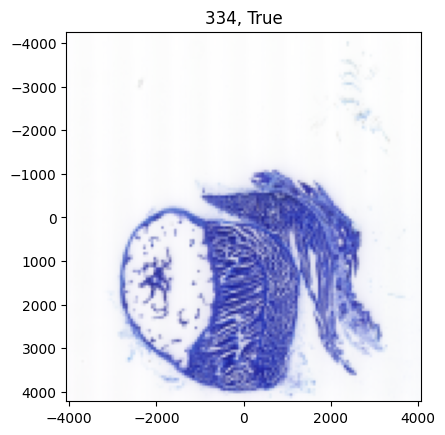
/nfs/data/main/M38/Atlas_free_alignment/atlas_free_alignment.py:294: RuntimeWarning: invalid value encountered in divide
Id = Id / (Wd + Wd.max()*1e-6)
[11]:
len(J_),len(all_locations)
[11]:
(335, 335)
[13]:
# now put into a volume
# find a size and interpolate images to this fixed size
q = np.ceil(np.quantile(nJ_,[0.95],0)).astype(int)
q = np.ceil(np.quantile(nJ_,[0.95],0)*1.5).astype(int)
# I think I want it to be bigger! TODO
nJ = np.concatenate([[len(all_locations)],q.squeeze()])
dJ = np.array([dz,dx*2**ndown,dx*2**ndown])
xJ = [np.arange(n)*d - (n-1)*d/2 for n,d in zip(nJ,dJ)]
XJ2d = np.stack(np.meshgrid(*xJ[1:],indexing='ij'),-1)
J__ = []
W__ = []
A2d0 = np.eye(3)[None].repeat(len(J_),axis=0)
for i in range(len(J_)):
# update A2d based on COM?
Jb = gaussian_filter(J_[i],sigma=(0,5,5))
#Wb = gaussian_filter(W_[i],sigma=(5,5))
Wb = W_[i]
Jb = 1-np.mean(Jb,0)
Jb0 = np.sum(Jb*Wb)
Jb10 = np.sum( Jb*Wb*xJ_[i][0][:,None] )
Jb11 = np.sum(Jb*Wb*xJ_[i][1])
com = [Jb10/Jb0, Jb11/Jb0]
A2d0[i][:2,-1] = com
Xs = (A2d0[i][:2,:2]@XJ2d[...,None])[...,0] + A2d0[i][:2,-1] # not using this for resampling the image, just a test if necessary
# TODO
# daniel thinks we chould cut out more of the boundaries, perhaps a fixed number of pixels
Xs = XJ2d
Jout = interpn(xJ_[i],(J_[i]*W_[i]).transpose(1,2,0),Xs,bounds_error=False,fill_value=1).transpose(-1,0,1)
Wout = interpn(xJ_[i],(W_[i]),Xs,bounds_error=False,fill_value=0,method='nearest')
Jout = Jout/(Wout + 1e-6) # make sure theres no divide by zero
Jout[np.isnan(Jout)] = 1
Jout[np.isinf(Jout)] = 1
Wout = (Wout==1.0).astype(float)
J__.append(Jout)
W__.append(Wout)
J__ = np.stack(J__,1)
W__ = np.stack(W__,0)
/tmp/ipykernel_368843/1730897294.py:26: RuntimeWarning: invalid value encountered in scalar divide
com = [Jb10/Jb0, Jb11/Jb0]
[14]:
A2d0[np.isnan(A2d0)] = 0.0
[15]:
fig,ax = afa.draw(J__,xJ,vmin=0,vmax=1)
Initialize the atlas¶
[16]:
dtype = torch.float64
[17]:
J = torch.tensor(J__,dtype=dtype).clip(0,1)
xJ = [torch.tensor(x,dtype=dtype) for x in xJ]
I0 = torch.ones(J.shape,dtype=dtype)*0.5 # a reasonable initial guess
I = I0
xI = [x.clone() for x in xJ]
W0 = torch.tensor(W__,dtype=dtype)
[18]:
afa.draw(I,xI,vmin=0,vmax=1)
[18]:
(<Figure size 640x480 with 15 Axes>,
array([[<Axes: >, <Axes: >, <Axes: >, <Axes: >, <Axes: >],
[<Axes: >, <Axes: >, <Axes: >, <Axes: >, <Axes: >],
[<Axes: >, <Axes: >, <Axes: >, <Axes: >, <Axes: >]], dtype=object))
initialize the parameters¶
[19]:
c = 3*0.25**2
p = 1.0
[20]:
# get the pixel locations
XI = torch.stack(torch.meshgrid(*xI[1:],indexing='ij'),-1)
XJ = torch.stack(torch.meshgrid(*xJ[1:],indexing='ij'),-1)
[21]:
reload(afa)
[21]:
<module 'atlas_free_alignment' from '/nfs/data/main/M38/Atlas_free_alignment/atlas_free_alignment.py'>
[27]:
# before I run this, downsample the image
down = [8,8]
xId,Id = afa.downsample_image_domain(xI,I,[1,down[0],down[1]])
xJd,Jd,W0d = afa.downsample_image_domain(xJ,J,[1,down[0],down[1]],W0,)
# blur J
blur = (0,0,1,1)
Jd = gaussian_filter(Jd*W0d,blur)
W0db = (gaussian_filter(W0d,blur[1:]))
Jd = Jd / (W0db + 1e-6)
Jd = torch.tensor(Jd,dtype=dtype)
W0d = torch.tensor(W0db,dtype=dtype)
a = 2e2 # make it bigger
a = torch.tensor([2e2*5,2e2,2e2])
Lhatd, LLhatd, Kblurhatd = afa.get_frequency_operators(Id.shape[1:],np.array([x[1] -x[0] for x in xId]),a,p)
[28]:
niter0 = 2000 # more?
niter_atlas0 = 5 # more than 3
eL0 = 1e-7
eT0 = 1e1
# make them bigger
eL0 = 5e-7 # oscilating, maybe this was too much
eT0 = 2e1
# after downsampling, they need to be bigger
eL0 = 1e-5
eT0 = 5e2
eL0 = 1e-5*5
eT0 = 5e2*2
[29]:
R = torch.zeros((I0.shape[1],3,3),dtype=dtype)
R[:,:,:] = torch.eye(3,dtype=dtype)[None]
#R[:,:,:] = torch.tensor(A2d0)
[30]:
Rin = R.clone()
#Rin[Rin.shape[0]//2,1,-1] = -5000 # test
[31]:
reload(afa)
[31]:
<module 'atlas_free_alignment' from '/nfs/data/main/M38/Atlas_free_alignment/atlas_free_alignment.py'>
[33]:
Rout0, Idout0, RiJd, RiWd, RId = afa.atlas_free_alignment(
xId,Id*0+1,xJd,Jd,W0d,Kblurhatd,
Rin,
niter0, niter_atlas0, eL0, eT0,
c=c, figprefix='v03_it_00', ndraw=100)
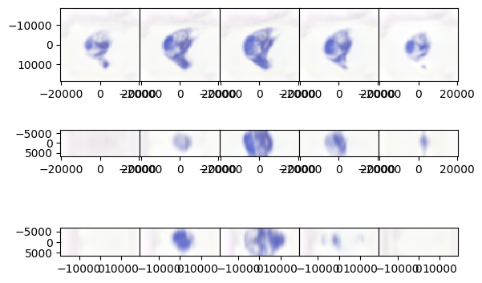
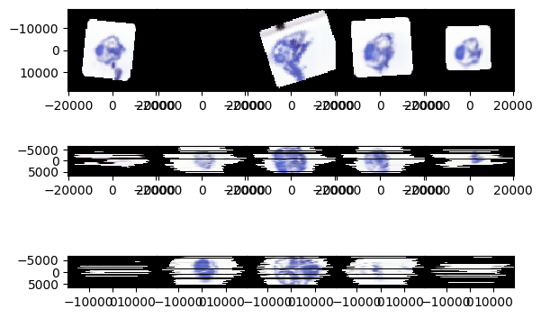
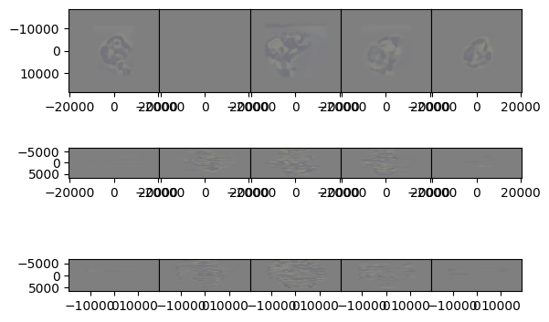
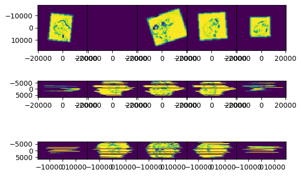
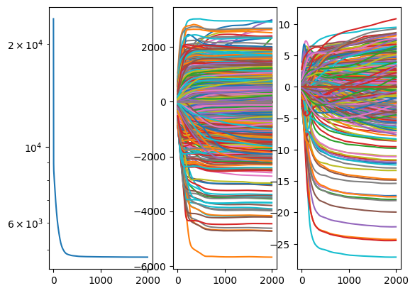
starting it 0
starting it 1
starting it 2
starting it 3
starting it 4
starting it 5
starting it 6
starting it 7
starting it 8
starting it 9
starting it 10
starting it 11
starting it 12
starting it 13
starting it 14
starting it 15
starting it 16
starting it 17
starting it 18
starting it 19
starting it 20
starting it 21
starting it 22
starting it 23
starting it 24
starting it 25
starting it 26
starting it 27
starting it 28
starting it 29
starting it 30
starting it 31
starting it 32
starting it 33
starting it 34
starting it 35
starting it 36
starting it 37
starting it 38
starting it 39
starting it 40
starting it 41
starting it 42
starting it 43
starting it 44
starting it 45
starting it 46
starting it 47
starting it 48
starting it 49
starting it 50
starting it 51
starting it 52
starting it 53
starting it 54
starting it 55
starting it 56
starting it 57
starting it 58
starting it 59
starting it 60
starting it 61
starting it 62
starting it 63
starting it 64
starting it 65
starting it 66
starting it 67
starting it 68
starting it 69
starting it 70
starting it 71
starting it 72
starting it 73
starting it 74
starting it 75
starting it 76
starting it 77
starting it 78
starting it 79
starting it 80
starting it 81
starting it 82
starting it 83
starting it 84
starting it 85
starting it 86
starting it 87
starting it 88
starting it 89
starting it 90
starting it 91
starting it 92
starting it 93
starting it 94
starting it 95
starting it 96
starting it 97
starting it 98
starting it 99
starting it 100
starting it 101
starting it 102
starting it 103
starting it 104
starting it 105
starting it 106
starting it 107
starting it 108
starting it 109
starting it 110
starting it 111
starting it 112
starting it 113
starting it 114
starting it 115
starting it 116
starting it 117
starting it 118
starting it 119
starting it 120
starting it 121
starting it 122
starting it 123
starting it 124
starting it 125
starting it 126
starting it 127
starting it 128
starting it 129
starting it 130
starting it 131
starting it 132
starting it 133
starting it 134
starting it 135
starting it 136
starting it 137
starting it 138
starting it 139
starting it 140
starting it 141
starting it 142
starting it 143
starting it 144
starting it 145
starting it 146
starting it 147
starting it 148
starting it 149
starting it 150
starting it 151
starting it 152
starting it 153
starting it 154
starting it 155
starting it 156
starting it 157
starting it 158
starting it 159
starting it 160
starting it 161
starting it 162
starting it 163
starting it 164
starting it 165
starting it 166
starting it 167
starting it 168
starting it 169
starting it 170
starting it 171
starting it 172
starting it 173
starting it 174
starting it 175
starting it 176
starting it 177
starting it 178
starting it 179
starting it 180
starting it 181
starting it 182
starting it 183
starting it 184
starting it 185
starting it 186
starting it 187
starting it 188
starting it 189
starting it 190
starting it 191
starting it 192
starting it 193
starting it 194
starting it 195
starting it 196
starting it 197
starting it 198
starting it 199
starting it 200
starting it 201
starting it 202
starting it 203
starting it 204
starting it 205
starting it 206
starting it 207
starting it 208
starting it 209
starting it 210
starting it 211
starting it 212
starting it 213
starting it 214
starting it 215
starting it 216
starting it 217
starting it 218
starting it 219
starting it 220
starting it 221
starting it 222
starting it 223
starting it 224
starting it 225
starting it 226
starting it 227
starting it 228
starting it 229
starting it 230
starting it 231
starting it 232
starting it 233
starting it 234
starting it 235
starting it 236
starting it 237
starting it 238
starting it 239
starting it 240
starting it 241
starting it 242
starting it 243
starting it 244
starting it 245
starting it 246
starting it 247
starting it 248
starting it 249
starting it 250
starting it 251
starting it 252
starting it 253
starting it 254
starting it 255
starting it 256
starting it 257
starting it 258
starting it 259
starting it 260
starting it 261
starting it 262
starting it 263
starting it 264
starting it 265
starting it 266
starting it 267
starting it 268
starting it 269
starting it 270
starting it 271
starting it 272
starting it 273
starting it 274
starting it 275
starting it 276
starting it 277
starting it 278
starting it 279
starting it 280
starting it 281
starting it 282
starting it 283
starting it 284
starting it 285
starting it 286
starting it 287
starting it 288
starting it 289
starting it 290
starting it 291
starting it 292
starting it 293
starting it 294
starting it 295
starting it 296
starting it 297
starting it 298
starting it 299
starting it 300
starting it 301
starting it 302
starting it 303
starting it 304
starting it 305
starting it 306
starting it 307
starting it 308
starting it 309
starting it 310
starting it 311
starting it 312
starting it 313
starting it 314
starting it 315
starting it 316
starting it 317
starting it 318
starting it 319
starting it 320
starting it 321
starting it 322
starting it 323
starting it 324
starting it 325
starting it 326
starting it 327
starting it 328
starting it 329
starting it 330
starting it 331
starting it 332
starting it 333
starting it 334
starting it 335
starting it 336
starting it 337
starting it 338
starting it 339
starting it 340
starting it 341
starting it 342
starting it 343
starting it 344
starting it 345
starting it 346
starting it 347
starting it 348
starting it 349
starting it 350
starting it 351
starting it 352
starting it 353
starting it 354
starting it 355
starting it 356
starting it 357
starting it 358
starting it 359
starting it 360
starting it 361
starting it 362
starting it 363
starting it 364
starting it 365
starting it 366
starting it 367
starting it 368
starting it 369
starting it 370
starting it 371
starting it 372
starting it 373
starting it 374
starting it 375
starting it 376
starting it 377
starting it 378
starting it 379
starting it 380
starting it 381
starting it 382
starting it 383
starting it 384
starting it 385
starting it 386
starting it 387
starting it 388
starting it 389
starting it 390
starting it 391
starting it 392
starting it 393
starting it 394
starting it 395
starting it 396
starting it 397
starting it 398
starting it 399
starting it 400
starting it 401
starting it 402
starting it 403
starting it 404
starting it 405
starting it 406
starting it 407
starting it 408
starting it 409
starting it 410
starting it 411
starting it 412
starting it 413
starting it 414
starting it 415
starting it 416
starting it 417
starting it 418
starting it 419
starting it 420
starting it 421
starting it 422
starting it 423
starting it 424
starting it 425
starting it 426
starting it 427
starting it 428
starting it 429
starting it 430
starting it 431
starting it 432
starting it 433
starting it 434
starting it 435
starting it 436
starting it 437
starting it 438
starting it 439
starting it 440
starting it 441
starting it 442
starting it 443
starting it 444
starting it 445
starting it 446
starting it 447
starting it 448
starting it 449
starting it 450
starting it 451
starting it 452
starting it 453
starting it 454
starting it 455
starting it 456
starting it 457
starting it 458
starting it 459
starting it 460
starting it 461
starting it 462
starting it 463
starting it 464
starting it 465
starting it 466
starting it 467
starting it 468
starting it 469
starting it 470
starting it 471
starting it 472
starting it 473
starting it 474
starting it 475
starting it 476
starting it 477
starting it 478
starting it 479
starting it 480
starting it 481
starting it 482
starting it 483
starting it 484
starting it 485
starting it 486
starting it 487
starting it 488
starting it 489
starting it 490
starting it 491
starting it 492
starting it 493
starting it 494
starting it 495
starting it 496
starting it 497
starting it 498
starting it 499
starting it 500
starting it 501
starting it 502
starting it 503
starting it 504
starting it 505
starting it 506
starting it 507
starting it 508
starting it 509
starting it 510
starting it 511
starting it 512
starting it 513
starting it 514
starting it 515
starting it 516
starting it 517
starting it 518
starting it 519
starting it 520
starting it 521
starting it 522
starting it 523
starting it 524
starting it 525
starting it 526
starting it 527
starting it 528
starting it 529
starting it 530
starting it 531
starting it 532
starting it 533
starting it 534
starting it 535
starting it 536
starting it 537
starting it 538
starting it 539
starting it 540
starting it 541
starting it 542
starting it 543
starting it 544
starting it 545
starting it 546
starting it 547
starting it 548
starting it 549
starting it 550
starting it 551
starting it 552
starting it 553
starting it 554
starting it 555
starting it 556
starting it 557
starting it 558
starting it 559
starting it 560
starting it 561
starting it 562
starting it 563
starting it 564
starting it 565
starting it 566
starting it 567
starting it 568
starting it 569
starting it 570
starting it 571
starting it 572
starting it 573
starting it 574
starting it 575
starting it 576
starting it 577
starting it 578
starting it 579
starting it 580
starting it 581
starting it 582
starting it 583
starting it 584
starting it 585
starting it 586
starting it 587
starting it 588
starting it 589
starting it 590
starting it 591
starting it 592
starting it 593
starting it 594
starting it 595
starting it 596
starting it 597
starting it 598
starting it 599
starting it 600
starting it 601
starting it 602
starting it 603
starting it 604
starting it 605
starting it 606
starting it 607
starting it 608
starting it 609
starting it 610
starting it 611
starting it 612
starting it 613
starting it 614
starting it 615
starting it 616
starting it 617
starting it 618
starting it 619
starting it 620
starting it 621
starting it 622
starting it 623
starting it 624
starting it 625
starting it 626
starting it 627
starting it 628
starting it 629
starting it 630
starting it 631
starting it 632
starting it 633
starting it 634
starting it 635
starting it 636
starting it 637
starting it 638
starting it 639
starting it 640
starting it 641
starting it 642
starting it 643
starting it 644
starting it 645
starting it 646
starting it 647
starting it 648
starting it 649
starting it 650
starting it 651
starting it 652
starting it 653
starting it 654
starting it 655
starting it 656
starting it 657
starting it 658
starting it 659
starting it 660
starting it 661
starting it 662
starting it 663
starting it 664
starting it 665
starting it 666
starting it 667
starting it 668
starting it 669
starting it 670
starting it 671
starting it 672
starting it 673
starting it 674
starting it 675
starting it 676
starting it 677
starting it 678
starting it 679
starting it 680
starting it 681
starting it 682
starting it 683
starting it 684
starting it 685
starting it 686
starting it 687
starting it 688
starting it 689
starting it 690
starting it 691
starting it 692
starting it 693
starting it 694
starting it 695
starting it 696
starting it 697
starting it 698
starting it 699
starting it 700
starting it 701
starting it 702
starting it 703
starting it 704
starting it 705
starting it 706
starting it 707
starting it 708
starting it 709
starting it 710
starting it 711
starting it 712
starting it 713
starting it 714
starting it 715
starting it 716
starting it 717
starting it 718
starting it 719
starting it 720
starting it 721
starting it 722
starting it 723
starting it 724
starting it 725
starting it 726
starting it 727
starting it 728
starting it 729
starting it 730
starting it 731
starting it 732
starting it 733
starting it 734
starting it 735
starting it 736
starting it 737
starting it 738
starting it 739
starting it 740
starting it 741
starting it 742
starting it 743
starting it 744
starting it 745
starting it 746
starting it 747
starting it 748
starting it 749
starting it 750
starting it 751
starting it 752
starting it 753
starting it 754
starting it 755
starting it 756
starting it 757
starting it 758
starting it 759
starting it 760
starting it 761
starting it 762
starting it 763
starting it 764
starting it 765
starting it 766
starting it 767
starting it 768
starting it 769
starting it 770
starting it 771
starting it 772
starting it 773
starting it 774
starting it 775
starting it 776
starting it 777
starting it 778
starting it 779
starting it 780
starting it 781
starting it 782
starting it 783
starting it 784
starting it 785
starting it 786
starting it 787
starting it 788
starting it 789
starting it 790
starting it 791
starting it 792
starting it 793
starting it 794
starting it 795
starting it 796
starting it 797
starting it 798
starting it 799
starting it 800
starting it 801
starting it 802
starting it 803
starting it 804
starting it 805
starting it 806
starting it 807
starting it 808
starting it 809
starting it 810
starting it 811
starting it 812
starting it 813
starting it 814
starting it 815
starting it 816
starting it 817
starting it 818
starting it 819
starting it 820
starting it 821
starting it 822
starting it 823
starting it 824
starting it 825
starting it 826
starting it 827
starting it 828
starting it 829
starting it 830
starting it 831
starting it 832
starting it 833
starting it 834
starting it 835
starting it 836
starting it 837
starting it 838
starting it 839
starting it 840
starting it 841
starting it 842
starting it 843
starting it 844
starting it 845
starting it 846
starting it 847
starting it 848
starting it 849
starting it 850
starting it 851
starting it 852
starting it 853
starting it 854
starting it 855
starting it 856
starting it 857
starting it 858
starting it 859
starting it 860
starting it 861
starting it 862
starting it 863
starting it 864
starting it 865
starting it 866
starting it 867
starting it 868
starting it 869
starting it 870
starting it 871
starting it 872
starting it 873
starting it 874
starting it 875
starting it 876
starting it 877
starting it 878
starting it 879
starting it 880
starting it 881
starting it 882
starting it 883
starting it 884
starting it 885
starting it 886
starting it 887
starting it 888
starting it 889
starting it 890
starting it 891
starting it 892
starting it 893
starting it 894
starting it 895
starting it 896
starting it 897
starting it 898
starting it 899
starting it 900
starting it 901
starting it 902
starting it 903
starting it 904
starting it 905
starting it 906
starting it 907
starting it 908
starting it 909
starting it 910
starting it 911
starting it 912
starting it 913
starting it 914
starting it 915
starting it 916
starting it 917
starting it 918
starting it 919
starting it 920
starting it 921
starting it 922
starting it 923
starting it 924
starting it 925
starting it 926
starting it 927
starting it 928
starting it 929
starting it 930
starting it 931
starting it 932
starting it 933
starting it 934
starting it 935
starting it 936
starting it 937
starting it 938
starting it 939
starting it 940
starting it 941
starting it 942
starting it 943
starting it 944
starting it 945
starting it 946
starting it 947
starting it 948
starting it 949
starting it 950
starting it 951
starting it 952
starting it 953
starting it 954
starting it 955
starting it 956
starting it 957
starting it 958
starting it 959
starting it 960
starting it 961
starting it 962
starting it 963
starting it 964
starting it 965
starting it 966
starting it 967
starting it 968
starting it 969
starting it 970
starting it 971
starting it 972
starting it 973
starting it 974
starting it 975
starting it 976
starting it 977
starting it 978
starting it 979
starting it 980
starting it 981
starting it 982
starting it 983
starting it 984
starting it 985
starting it 986
starting it 987
starting it 988
starting it 989
starting it 990
starting it 991
starting it 992
starting it 993
starting it 994
starting it 995
starting it 996
starting it 997
starting it 998
starting it 999
starting it 1000
starting it 1001
starting it 1002
starting it 1003
starting it 1004
starting it 1005
starting it 1006
starting it 1007
starting it 1008
starting it 1009
starting it 1010
starting it 1011
starting it 1012
starting it 1013
starting it 1014
starting it 1015
starting it 1016
starting it 1017
starting it 1018
starting it 1019
starting it 1020
starting it 1021
starting it 1022
starting it 1023
starting it 1024
starting it 1025
starting it 1026
starting it 1027
starting it 1028
starting it 1029
starting it 1030
starting it 1031
starting it 1032
starting it 1033
starting it 1034
starting it 1035
starting it 1036
starting it 1037
starting it 1038
starting it 1039
starting it 1040
starting it 1041
starting it 1042
starting it 1043
starting it 1044
starting it 1045
starting it 1046
starting it 1047
starting it 1048
starting it 1049
starting it 1050
starting it 1051
starting it 1052
starting it 1053
starting it 1054
starting it 1055
starting it 1056
starting it 1057
starting it 1058
starting it 1059
starting it 1060
starting it 1061
starting it 1062
starting it 1063
starting it 1064
starting it 1065
starting it 1066
starting it 1067
starting it 1068
starting it 1069
starting it 1070
starting it 1071
starting it 1072
starting it 1073
starting it 1074
starting it 1075
starting it 1076
starting it 1077
starting it 1078
starting it 1079
starting it 1080
starting it 1081
starting it 1082
starting it 1083
starting it 1084
starting it 1085
starting it 1086
starting it 1087
starting it 1088
starting it 1089
starting it 1090
starting it 1091
starting it 1092
starting it 1093
starting it 1094
starting it 1095
starting it 1096
starting it 1097
starting it 1098
starting it 1099
starting it 1100
starting it 1101
starting it 1102
starting it 1103
starting it 1104
starting it 1105
starting it 1106
starting it 1107
starting it 1108
starting it 1109
starting it 1110
starting it 1111
starting it 1112
starting it 1113
starting it 1114
starting it 1115
starting it 1116
starting it 1117
starting it 1118
starting it 1119
starting it 1120
starting it 1121
starting it 1122
starting it 1123
starting it 1124
starting it 1125
starting it 1126
starting it 1127
starting it 1128
starting it 1129
starting it 1130
starting it 1131
starting it 1132
starting it 1133
starting it 1134
starting it 1135
starting it 1136
starting it 1137
starting it 1138
starting it 1139
starting it 1140
starting it 1141
starting it 1142
starting it 1143
starting it 1144
starting it 1145
starting it 1146
starting it 1147
starting it 1148
starting it 1149
starting it 1150
starting it 1151
starting it 1152
starting it 1153
starting it 1154
starting it 1155
starting it 1156
starting it 1157
starting it 1158
starting it 1159
starting it 1160
starting it 1161
starting it 1162
starting it 1163
starting it 1164
starting it 1165
starting it 1166
starting it 1167
starting it 1168
starting it 1169
starting it 1170
starting it 1171
starting it 1172
starting it 1173
starting it 1174
starting it 1175
starting it 1176
starting it 1177
starting it 1178
starting it 1179
starting it 1180
starting it 1181
starting it 1182
starting it 1183
starting it 1184
starting it 1185
starting it 1186
starting it 1187
starting it 1188
starting it 1189
starting it 1190
starting it 1191
starting it 1192
starting it 1193
starting it 1194
starting it 1195
starting it 1196
starting it 1197
starting it 1198
starting it 1199
starting it 1200
starting it 1201
starting it 1202
starting it 1203
starting it 1204
starting it 1205
starting it 1206
starting it 1207
starting it 1208
starting it 1209
starting it 1210
starting it 1211
starting it 1212
starting it 1213
starting it 1214
starting it 1215
starting it 1216
starting it 1217
starting it 1218
starting it 1219
starting it 1220
starting it 1221
starting it 1222
starting it 1223
starting it 1224
starting it 1225
starting it 1226
starting it 1227
starting it 1228
starting it 1229
starting it 1230
starting it 1231
starting it 1232
starting it 1233
starting it 1234
starting it 1235
starting it 1236
starting it 1237
starting it 1238
starting it 1239
starting it 1240
starting it 1241
starting it 1242
starting it 1243
starting it 1244
starting it 1245
starting it 1246
starting it 1247
starting it 1248
starting it 1249
starting it 1250
starting it 1251
starting it 1252
starting it 1253
starting it 1254
starting it 1255
starting it 1256
starting it 1257
starting it 1258
starting it 1259
starting it 1260
starting it 1261
starting it 1262
starting it 1263
starting it 1264
starting it 1265
starting it 1266
starting it 1267
starting it 1268
starting it 1269
starting it 1270
starting it 1271
starting it 1272
starting it 1273
starting it 1274
starting it 1275
starting it 1276
starting it 1277
starting it 1278
starting it 1279
starting it 1280
starting it 1281
starting it 1282
starting it 1283
starting it 1284
starting it 1285
starting it 1286
starting it 1287
starting it 1288
starting it 1289
starting it 1290
starting it 1291
starting it 1292
starting it 1293
starting it 1294
starting it 1295
starting it 1296
starting it 1297
starting it 1298
starting it 1299
starting it 1300
starting it 1301
starting it 1302
starting it 1303
starting it 1304
starting it 1305
starting it 1306
starting it 1307
starting it 1308
starting it 1309
starting it 1310
starting it 1311
starting it 1312
starting it 1313
starting it 1314
starting it 1315
starting it 1316
starting it 1317
starting it 1318
starting it 1319
starting it 1320
starting it 1321
starting it 1322
starting it 1323
starting it 1324
starting it 1325
starting it 1326
starting it 1327
starting it 1328
starting it 1329
starting it 1330
starting it 1331
starting it 1332
starting it 1333
starting it 1334
starting it 1335
starting it 1336
starting it 1337
starting it 1338
starting it 1339
starting it 1340
starting it 1341
starting it 1342
starting it 1343
starting it 1344
starting it 1345
starting it 1346
starting it 1347
starting it 1348
starting it 1349
starting it 1350
starting it 1351
starting it 1352
starting it 1353
starting it 1354
starting it 1355
starting it 1356
starting it 1357
starting it 1358
starting it 1359
starting it 1360
starting it 1361
starting it 1362
starting it 1363
starting it 1364
starting it 1365
starting it 1366
starting it 1367
starting it 1368
starting it 1369
starting it 1370
starting it 1371
starting it 1372
starting it 1373
starting it 1374
starting it 1375
starting it 1376
starting it 1377
starting it 1378
starting it 1379
starting it 1380
starting it 1381
starting it 1382
starting it 1383
starting it 1384
starting it 1385
starting it 1386
starting it 1387
starting it 1388
starting it 1389
starting it 1390
starting it 1391
starting it 1392
starting it 1393
starting it 1394
starting it 1395
starting it 1396
starting it 1397
starting it 1398
starting it 1399
starting it 1400
starting it 1401
starting it 1402
starting it 1403
starting it 1404
starting it 1405
starting it 1406
starting it 1407
starting it 1408
starting it 1409
starting it 1410
starting it 1411
starting it 1412
starting it 1413
starting it 1414
starting it 1415
starting it 1416
starting it 1417
starting it 1418
starting it 1419
starting it 1420
starting it 1421
starting it 1422
starting it 1423
starting it 1424
starting it 1425
starting it 1426
starting it 1427
starting it 1428
starting it 1429
starting it 1430
starting it 1431
starting it 1432
starting it 1433
starting it 1434
starting it 1435
starting it 1436
starting it 1437
starting it 1438
starting it 1439
starting it 1440
starting it 1441
starting it 1442
starting it 1443
starting it 1444
starting it 1445
starting it 1446
starting it 1447
starting it 1448
starting it 1449
starting it 1450
starting it 1451
starting it 1452
starting it 1453
starting it 1454
starting it 1455
starting it 1456
starting it 1457
starting it 1458
starting it 1459
starting it 1460
starting it 1461
starting it 1462
starting it 1463
starting it 1464
starting it 1465
starting it 1466
starting it 1467
starting it 1468
starting it 1469
starting it 1470
starting it 1471
starting it 1472
starting it 1473
starting it 1474
starting it 1475
starting it 1476
starting it 1477
starting it 1478
starting it 1479
starting it 1480
starting it 1481
starting it 1482
starting it 1483
starting it 1484
starting it 1485
starting it 1486
starting it 1487
starting it 1488
starting it 1489
starting it 1490
starting it 1491
starting it 1492
starting it 1493
starting it 1494
starting it 1495
starting it 1496
starting it 1497
starting it 1498
starting it 1499
starting it 1500
starting it 1501
starting it 1502
starting it 1503
starting it 1504
starting it 1505
starting it 1506
starting it 1507
starting it 1508
starting it 1509
starting it 1510
starting it 1511
starting it 1512
starting it 1513
starting it 1514
starting it 1515
starting it 1516
starting it 1517
starting it 1518
starting it 1519
starting it 1520
starting it 1521
starting it 1522
starting it 1523
starting it 1524
starting it 1525
starting it 1526
starting it 1527
starting it 1528
starting it 1529
starting it 1530
starting it 1531
starting it 1532
starting it 1533
starting it 1534
starting it 1535
starting it 1536
starting it 1537
starting it 1538
starting it 1539
starting it 1540
starting it 1541
starting it 1542
starting it 1543
starting it 1544
starting it 1545
starting it 1546
starting it 1547
starting it 1548
starting it 1549
starting it 1550
starting it 1551
starting it 1552
starting it 1553
starting it 1554
starting it 1555
starting it 1556
starting it 1557
starting it 1558
starting it 1559
starting it 1560
starting it 1561
starting it 1562
starting it 1563
starting it 1564
starting it 1565
starting it 1566
starting it 1567
starting it 1568
starting it 1569
starting it 1570
starting it 1571
starting it 1572
starting it 1573
starting it 1574
starting it 1575
starting it 1576
starting it 1577
starting it 1578
starting it 1579
starting it 1580
starting it 1581
starting it 1582
starting it 1583
starting it 1584
starting it 1585
starting it 1586
starting it 1587
starting it 1588
starting it 1589
starting it 1590
starting it 1591
starting it 1592
starting it 1593
starting it 1594
starting it 1595
starting it 1596
starting it 1597
starting it 1598
starting it 1599
starting it 1600
starting it 1601
starting it 1602
starting it 1603
starting it 1604
starting it 1605
starting it 1606
starting it 1607
starting it 1608
starting it 1609
starting it 1610
starting it 1611
starting it 1612
starting it 1613
starting it 1614
starting it 1615
starting it 1616
starting it 1617
starting it 1618
starting it 1619
starting it 1620
starting it 1621
starting it 1622
starting it 1623
starting it 1624
starting it 1625
starting it 1626
starting it 1627
starting it 1628
starting it 1629
starting it 1630
starting it 1631
starting it 1632
starting it 1633
starting it 1634
starting it 1635
starting it 1636
starting it 1637
starting it 1638
starting it 1639
starting it 1640
starting it 1641
starting it 1642
starting it 1643
starting it 1644
starting it 1645
starting it 1646
starting it 1647
starting it 1648
starting it 1649
starting it 1650
starting it 1651
starting it 1652
starting it 1653
starting it 1654
starting it 1655
starting it 1656
starting it 1657
starting it 1658
starting it 1659
starting it 1660
starting it 1661
starting it 1662
starting it 1663
starting it 1664
starting it 1665
starting it 1666
starting it 1667
starting it 1668
starting it 1669
starting it 1670
starting it 1671
starting it 1672
starting it 1673
starting it 1674
starting it 1675
starting it 1676
starting it 1677
starting it 1678
starting it 1679
starting it 1680
starting it 1681
starting it 1682
starting it 1683
starting it 1684
starting it 1685
starting it 1686
starting it 1687
starting it 1688
starting it 1689
starting it 1690
starting it 1691
starting it 1692
starting it 1693
starting it 1694
starting it 1695
starting it 1696
starting it 1697
starting it 1698
starting it 1699
starting it 1700
starting it 1701
starting it 1702
starting it 1703
starting it 1704
starting it 1705
starting it 1706
starting it 1707
starting it 1708
starting it 1709
starting it 1710
starting it 1711
starting it 1712
starting it 1713
starting it 1714
starting it 1715
starting it 1716
starting it 1717
starting it 1718
starting it 1719
starting it 1720
starting it 1721
starting it 1722
starting it 1723
starting it 1724
starting it 1725
starting it 1726
starting it 1727
starting it 1728
starting it 1729
starting it 1730
starting it 1731
starting it 1732
starting it 1733
starting it 1734
starting it 1735
starting it 1736
starting it 1737
starting it 1738
starting it 1739
starting it 1740
starting it 1741
starting it 1742
starting it 1743
starting it 1744
starting it 1745
starting it 1746
starting it 1747
starting it 1748
starting it 1749
starting it 1750
starting it 1751
starting it 1752
starting it 1753
starting it 1754
starting it 1755
starting it 1756
starting it 1757
starting it 1758
starting it 1759
starting it 1760
starting it 1761
starting it 1762
starting it 1763
starting it 1764
starting it 1765
starting it 1766
starting it 1767
starting it 1768
starting it 1769
starting it 1770
starting it 1771
starting it 1772
starting it 1773
starting it 1774
starting it 1775
starting it 1776
starting it 1777
starting it 1778
starting it 1779
starting it 1780
starting it 1781
starting it 1782
starting it 1783
starting it 1784
starting it 1785
starting it 1786
starting it 1787
starting it 1788
starting it 1789
starting it 1790
starting it 1791
starting it 1792
starting it 1793
starting it 1794
starting it 1795
starting it 1796
starting it 1797
starting it 1798
starting it 1799
starting it 1800
starting it 1801
starting it 1802
starting it 1803
starting it 1804
starting it 1805
starting it 1806
starting it 1807
starting it 1808
starting it 1809
starting it 1810
starting it 1811
starting it 1812
starting it 1813
starting it 1814
starting it 1815
starting it 1816
starting it 1817
starting it 1818
starting it 1819
starting it 1820
starting it 1821
starting it 1822
starting it 1823
starting it 1824
starting it 1825
starting it 1826
starting it 1827
starting it 1828
starting it 1829
starting it 1830
starting it 1831
starting it 1832
starting it 1833
starting it 1834
starting it 1835
starting it 1836
starting it 1837
starting it 1838
starting it 1839
starting it 1840
starting it 1841
starting it 1842
starting it 1843
starting it 1844
starting it 1845
starting it 1846
starting it 1847
starting it 1848
starting it 1849
starting it 1850
starting it 1851
starting it 1852
starting it 1853
starting it 1854
starting it 1855
starting it 1856
starting it 1857
starting it 1858
starting it 1859
starting it 1860
starting it 1861
starting it 1862
starting it 1863
starting it 1864
starting it 1865
starting it 1866
starting it 1867
starting it 1868
starting it 1869
starting it 1870
starting it 1871
starting it 1872
starting it 1873
starting it 1874
starting it 1875
starting it 1876
starting it 1877
starting it 1878
starting it 1879
starting it 1880
starting it 1881
starting it 1882
starting it 1883
starting it 1884
starting it 1885
starting it 1886
starting it 1887
starting it 1888
starting it 1889
starting it 1890
starting it 1891
starting it 1892
starting it 1893
starting it 1894
starting it 1895
starting it 1896
starting it 1897
starting it 1898
starting it 1899
starting it 1900
starting it 1901
starting it 1902
starting it 1903
starting it 1904
starting it 1905
starting it 1906
starting it 1907
starting it 1908
starting it 1909
starting it 1910
starting it 1911
starting it 1912
starting it 1913
starting it 1914
starting it 1915
starting it 1916
starting it 1917
starting it 1918
starting it 1919
starting it 1920
starting it 1921
starting it 1922
starting it 1923
starting it 1924
starting it 1925
starting it 1926
starting it 1927
starting it 1928
starting it 1929
starting it 1930
starting it 1931
starting it 1932
starting it 1933
starting it 1934
starting it 1935
starting it 1936
starting it 1937
starting it 1938
starting it 1939
starting it 1940
starting it 1941
starting it 1942
starting it 1943
starting it 1944
starting it 1945
starting it 1946
starting it 1947
starting it 1948
starting it 1949
starting it 1950
starting it 1951
starting it 1952
starting it 1953
starting it 1954
starting it 1955
starting it 1956
starting it 1957
starting it 1958
starting it 1959
starting it 1960
starting it 1961
starting it 1962
starting it 1963
starting it 1964
starting it 1965
starting it 1966
starting it 1967
starting it 1968
starting it 1969
starting it 1970
starting it 1971
starting it 1972
starting it 1973
starting it 1974
starting it 1975
starting it 1976
starting it 1977
starting it 1978
starting it 1979
starting it 1980
starting it 1981
starting it 1982
starting it 1983
starting it 1984
starting it 1985
starting it 1986
starting it 1987
starting it 1988
starting it 1989
starting it 1990
starting it 1991
starting it 1992
starting it 1993
starting it 1994
starting it 1995
starting it 1996
starting it 1997
starting it 1998
starting it 1999
[34]:
# save the rigid transforms
np.save('v03_rigid_0.npy',Rout0.cpu().numpy())
[35]:
# can I upsample I? I can use sinc resampling
reload(afa)
I_ = afa.sinc_upsample(Idout0,I.shape[-3:])
[36]:
afa.draw(I_,xI,vmin=0,vmax=1)
[36]:
(<Figure size 640x480 with 15 Axes>,
array([[<Axes: >, <Axes: >, <Axes: >, <Axes: >, <Axes: >],
[<Axes: >, <Axes: >, <Axes: >, <Axes: >, <Axes: >],
[<Axes: >, <Axes: >, <Axes: >, <Axes: >, <Axes: >]], dtype=object))
[37]:
# before I run this, downsample the image
down = [4,4]
xId,Id = afa.downsample_image_domain(xI,I_,[1,down[0],down[1]])
xJd,Jd,W0d = afa.downsample_image_domain(xJ,J,[1,down[0],down[1]],W0,)
Jd = gaussian_filter(Jd*W0d,blur)
W0db = (gaussian_filter(W0d,blur[1:]))
Jd = Jd / (W0db + 1e-6)
Jd = torch.tensor(Jd,dtype=dtype)
W0d = torch.tensor(W0db,dtype=dtype)
#a = 1e2 # less smoothing
a = a/2
Lhatd, LLhatd, Kblurhatd = afa.get_frequency_operators(Id.shape[1:],np.array([x[1] -x[0] for x in xId]),a,p)
[38]:
eL1 = eL0/4 # /2 wasn't enough
eT1 = eT0/4
niter1 = 1000
[39]:
Rout1, Idout1, RiJd, RiWd, RId = afa.atlas_free_alignment(
xId,Id,xJd,Jd,W0d,Kblurhatd,
Rout0,
niter1, niter_atlas0, eL1, eT1,
c=c, figprefix='v03_it_01', ndraw=100)
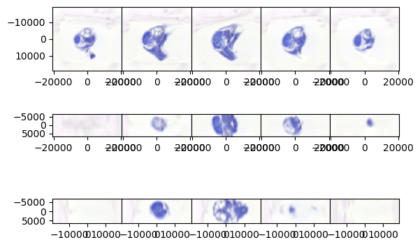
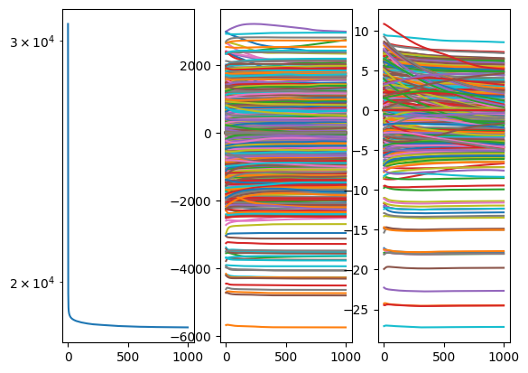
starting it 0
starting it 1
starting it 2
starting it 3
starting it 4
starting it 5
starting it 6
starting it 7
starting it 8
starting it 9
starting it 10
starting it 11
starting it 12
starting it 13
starting it 14
starting it 15
starting it 16
starting it 17
starting it 18
starting it 19
starting it 20
starting it 21
starting it 22
starting it 23
starting it 24
starting it 25
starting it 26
starting it 27
starting it 28
starting it 29
starting it 30
starting it 31
starting it 32
starting it 33
starting it 34
starting it 35
starting it 36
starting it 37
starting it 38
starting it 39
starting it 40
starting it 41
starting it 42
starting it 43
starting it 44
starting it 45
starting it 46
starting it 47
starting it 48
starting it 49
starting it 50
starting it 51
starting it 52
starting it 53
starting it 54
starting it 55
starting it 56
starting it 57
starting it 58
starting it 59
starting it 60
starting it 61
starting it 62
starting it 63
starting it 64
starting it 65
starting it 66
starting it 67
starting it 68
starting it 69
starting it 70
starting it 71
starting it 72
starting it 73
starting it 74
starting it 75
starting it 76
starting it 77
starting it 78
starting it 79
starting it 80
starting it 81
starting it 82
starting it 83
starting it 84
starting it 85
starting it 86
starting it 87
starting it 88
starting it 89
starting it 90
starting it 91
starting it 92
starting it 93
starting it 94
starting it 95
starting it 96
starting it 97
starting it 98
starting it 99
starting it 100
starting it 101
starting it 102
starting it 103
starting it 104
starting it 105
starting it 106
starting it 107
starting it 108
starting it 109
starting it 110
starting it 111
starting it 112
starting it 113
starting it 114
starting it 115
starting it 116
starting it 117
starting it 118
starting it 119
starting it 120
starting it 121
starting it 122
starting it 123
starting it 124
starting it 125
starting it 126
starting it 127
starting it 128
starting it 129
starting it 130
starting it 131
starting it 132
starting it 133
starting it 134
starting it 135
starting it 136
starting it 137
starting it 138
starting it 139
starting it 140
starting it 141
starting it 142
starting it 143
starting it 144
starting it 145
starting it 146
starting it 147
starting it 148
starting it 149
starting it 150
starting it 151
starting it 152
starting it 153
starting it 154
starting it 155
starting it 156
starting it 157
starting it 158
starting it 159
starting it 160
starting it 161
starting it 162
starting it 163
starting it 164
starting it 165
starting it 166
starting it 167
starting it 168
starting it 169
starting it 170
starting it 171
starting it 172
starting it 173
starting it 174
starting it 175
starting it 176
starting it 177
starting it 178
starting it 179
starting it 180
starting it 181
starting it 182
starting it 183
starting it 184
starting it 185
starting it 186
starting it 187
starting it 188
starting it 189
starting it 190
starting it 191
starting it 192
starting it 193
starting it 194
starting it 195
starting it 196
starting it 197
starting it 198
starting it 199
starting it 200
starting it 201
starting it 202
starting it 203
starting it 204
starting it 205
starting it 206
starting it 207
starting it 208
starting it 209
starting it 210
starting it 211
starting it 212
starting it 213
starting it 214
starting it 215
starting it 216
starting it 217
starting it 218
starting it 219
starting it 220
starting it 221
starting it 222
starting it 223
starting it 224
starting it 225
starting it 226
starting it 227
starting it 228
starting it 229
starting it 230
starting it 231
starting it 232
starting it 233
starting it 234
starting it 235
starting it 236
starting it 237
starting it 238
starting it 239
starting it 240
starting it 241
starting it 242
starting it 243
starting it 244
starting it 245
starting it 246
starting it 247
starting it 248
starting it 249
starting it 250
starting it 251
starting it 252
starting it 253
starting it 254
starting it 255
starting it 256
starting it 257
starting it 258
starting it 259
starting it 260
starting it 261
starting it 262
starting it 263
starting it 264
starting it 265
starting it 266
starting it 267
starting it 268
starting it 269
starting it 270
starting it 271
starting it 272
starting it 273
starting it 274
starting it 275
starting it 276
starting it 277
starting it 278
starting it 279
starting it 280
starting it 281
starting it 282
starting it 283
starting it 284
starting it 285
starting it 286
starting it 287
starting it 288
starting it 289
starting it 290
starting it 291
starting it 292
starting it 293
starting it 294
starting it 295
starting it 296
starting it 297
starting it 298
starting it 299
starting it 300
starting it 301
starting it 302
starting it 303
starting it 304
starting it 305
starting it 306
starting it 307
starting it 308
starting it 309
starting it 310
starting it 311
starting it 312
starting it 313
starting it 314
starting it 315
starting it 316
starting it 317
starting it 318
starting it 319
starting it 320
starting it 321
starting it 322
starting it 323
starting it 324
starting it 325
starting it 326
starting it 327
starting it 328
starting it 329
starting it 330
starting it 331
starting it 332
starting it 333
starting it 334
starting it 335
starting it 336
starting it 337
starting it 338
starting it 339
starting it 340
starting it 341
starting it 342
starting it 343
starting it 344
starting it 345
starting it 346
starting it 347
starting it 348
starting it 349
starting it 350
starting it 351
starting it 352
starting it 353
starting it 354
starting it 355
starting it 356
starting it 357
starting it 358
starting it 359
starting it 360
starting it 361
starting it 362
starting it 363
starting it 364
starting it 365
starting it 366
starting it 367
starting it 368
starting it 369
starting it 370
starting it 371
starting it 372
starting it 373
starting it 374
starting it 375
starting it 376
starting it 377
starting it 378
starting it 379
starting it 380
starting it 381
starting it 382
starting it 383
starting it 384
starting it 385
starting it 386
starting it 387
starting it 388
starting it 389
starting it 390
starting it 391
starting it 392
starting it 393
starting it 394
starting it 395
starting it 396
starting it 397
starting it 398
starting it 399
starting it 400
starting it 401
starting it 402
starting it 403
starting it 404
starting it 405
starting it 406
starting it 407
starting it 408
starting it 409
starting it 410
starting it 411
starting it 412
starting it 413
starting it 414
starting it 415
starting it 416
starting it 417
starting it 418
starting it 419
starting it 420
starting it 421
starting it 422
starting it 423
starting it 424
starting it 425
starting it 426
starting it 427
starting it 428
starting it 429
starting it 430
starting it 431
starting it 432
starting it 433
starting it 434
starting it 435
starting it 436
starting it 437
starting it 438
starting it 439
starting it 440
starting it 441
starting it 442
starting it 443
starting it 444
starting it 445
starting it 446
starting it 447
starting it 448
starting it 449
starting it 450
starting it 451
starting it 452
starting it 453
starting it 454
starting it 455
starting it 456
starting it 457
starting it 458
starting it 459
starting it 460
starting it 461
starting it 462
starting it 463
starting it 464
starting it 465
starting it 466
starting it 467
starting it 468
starting it 469
starting it 470
starting it 471
starting it 472
starting it 473
starting it 474
starting it 475
starting it 476
starting it 477
starting it 478
starting it 479
starting it 480
starting it 481
starting it 482
starting it 483
starting it 484
starting it 485
starting it 486
starting it 487
starting it 488
starting it 489
starting it 490
starting it 491
starting it 492
starting it 493
starting it 494
starting it 495
starting it 496
starting it 497
starting it 498
starting it 499
starting it 500
starting it 501
starting it 502
starting it 503
starting it 504
starting it 505
starting it 506
starting it 507
starting it 508
starting it 509
starting it 510
starting it 511
starting it 512
starting it 513
starting it 514
starting it 515
starting it 516
starting it 517
starting it 518
starting it 519
starting it 520
starting it 521
starting it 522
starting it 523
starting it 524
starting it 525
starting it 526
starting it 527
starting it 528
starting it 529
starting it 530
starting it 531
starting it 532
starting it 533
starting it 534
starting it 535
starting it 536
starting it 537
starting it 538
starting it 539
starting it 540
starting it 541
starting it 542
starting it 543
starting it 544
starting it 545
starting it 546
starting it 547
starting it 548
starting it 549
starting it 550
starting it 551
starting it 552
starting it 553
starting it 554
starting it 555
starting it 556
starting it 557
starting it 558
starting it 559
starting it 560
starting it 561
starting it 562
starting it 563
starting it 564
starting it 565
starting it 566
starting it 567
starting it 568
starting it 569
starting it 570
starting it 571
starting it 572
starting it 573
starting it 574
starting it 575
starting it 576
starting it 577
starting it 578
starting it 579
starting it 580
starting it 581
starting it 582
starting it 583
starting it 584
starting it 585
starting it 586
starting it 587
starting it 588
starting it 589
starting it 590
starting it 591
starting it 592
starting it 593
starting it 594
starting it 595
starting it 596
starting it 597
starting it 598
starting it 599
starting it 600
starting it 601
starting it 602
starting it 603
starting it 604
starting it 605
starting it 606
starting it 607
starting it 608
starting it 609
starting it 610
starting it 611
starting it 612
starting it 613
starting it 614
starting it 615
starting it 616
starting it 617
starting it 618
starting it 619
starting it 620
starting it 621
starting it 622
starting it 623
starting it 624
starting it 625
starting it 626
starting it 627
starting it 628
starting it 629
starting it 630
starting it 631
starting it 632
starting it 633
starting it 634
starting it 635
starting it 636
starting it 637
starting it 638
starting it 639
starting it 640
starting it 641
starting it 642
starting it 643
starting it 644
starting it 645
starting it 646
starting it 647
starting it 648
starting it 649
starting it 650
starting it 651
starting it 652
starting it 653
starting it 654
starting it 655
starting it 656
starting it 657
starting it 658
starting it 659
starting it 660
starting it 661
starting it 662
starting it 663
starting it 664
starting it 665
starting it 666
starting it 667
starting it 668
starting it 669
starting it 670
starting it 671
starting it 672
starting it 673
starting it 674
starting it 675
starting it 676
starting it 677
starting it 678
starting it 679
starting it 680
starting it 681
starting it 682
starting it 683
starting it 684
starting it 685
starting it 686
starting it 687
starting it 688
starting it 689
starting it 690
starting it 691
starting it 692
starting it 693
starting it 694
starting it 695
starting it 696
starting it 697
starting it 698
starting it 699
starting it 700
starting it 701
starting it 702
starting it 703
starting it 704
starting it 705
starting it 706
starting it 707
starting it 708
starting it 709
starting it 710
starting it 711
starting it 712
starting it 713
starting it 714
starting it 715
starting it 716
starting it 717
starting it 718
starting it 719
starting it 720
starting it 721
starting it 722
starting it 723
starting it 724
starting it 725
starting it 726
starting it 727
starting it 728
starting it 729
starting it 730
starting it 731
starting it 732
starting it 733
starting it 734
starting it 735
starting it 736
starting it 737
starting it 738
starting it 739
starting it 740
starting it 741
starting it 742
starting it 743
starting it 744
starting it 745
starting it 746
starting it 747
starting it 748
starting it 749
starting it 750
starting it 751
starting it 752
starting it 753
starting it 754
starting it 755
starting it 756
starting it 757
starting it 758
starting it 759
starting it 760
starting it 761
starting it 762
starting it 763
starting it 764
starting it 765
starting it 766
starting it 767
starting it 768
starting it 769
starting it 770
starting it 771
starting it 772
starting it 773
starting it 774
starting it 775
starting it 776
starting it 777
starting it 778
starting it 779
starting it 780
starting it 781
starting it 782
starting it 783
starting it 784
starting it 785
starting it 786
starting it 787
starting it 788
starting it 789
starting it 790
starting it 791
starting it 792
starting it 793
starting it 794
starting it 795
starting it 796
starting it 797
starting it 798
starting it 799
starting it 800
starting it 801
starting it 802
starting it 803
starting it 804
starting it 805
starting it 806
starting it 807
starting it 808
starting it 809
starting it 810
starting it 811
starting it 812
starting it 813
starting it 814
starting it 815
starting it 816
starting it 817
starting it 818
starting it 819
starting it 820
starting it 821
starting it 822
starting it 823
starting it 824
starting it 825
starting it 826
starting it 827
starting it 828
starting it 829
starting it 830
starting it 831
starting it 832
starting it 833
starting it 834
starting it 835
starting it 836
starting it 837
starting it 838
starting it 839
starting it 840
starting it 841
starting it 842
starting it 843
starting it 844
starting it 845
starting it 846
starting it 847
starting it 848
starting it 849
starting it 850
starting it 851
starting it 852
starting it 853
starting it 854
starting it 855
starting it 856
starting it 857
starting it 858
starting it 859
starting it 860
starting it 861
starting it 862
starting it 863
starting it 864
starting it 865
starting it 866
starting it 867
starting it 868
starting it 869
starting it 870
starting it 871
starting it 872
starting it 873
starting it 874
starting it 875
starting it 876
starting it 877
starting it 878
starting it 879
starting it 880
starting it 881
starting it 882
starting it 883
starting it 884
starting it 885
starting it 886
starting it 887
starting it 888
starting it 889
starting it 890
starting it 891
starting it 892
starting it 893
starting it 894
starting it 895
starting it 896
starting it 897
starting it 898
starting it 899
starting it 900
starting it 901
starting it 902
starting it 903
starting it 904
starting it 905
starting it 906
starting it 907
starting it 908
starting it 909
starting it 910
starting it 911
starting it 912
starting it 913
starting it 914
starting it 915
starting it 916
starting it 917
starting it 918
starting it 919
starting it 920
starting it 921
starting it 922
starting it 923
starting it 924
starting it 925
starting it 926
starting it 927
starting it 928
starting it 929
starting it 930
starting it 931
starting it 932
starting it 933
starting it 934
starting it 935
starting it 936
starting it 937
starting it 938
starting it 939
starting it 940
starting it 941
starting it 942
starting it 943
starting it 944
starting it 945
starting it 946
starting it 947
starting it 948
starting it 949
starting it 950
starting it 951
starting it 952
starting it 953
starting it 954
starting it 955
starting it 956
starting it 957
starting it 958
starting it 959
starting it 960
starting it 961
starting it 962
starting it 963
starting it 964
starting it 965
starting it 966
starting it 967
starting it 968
starting it 969
starting it 970
starting it 971
starting it 972
starting it 973
starting it 974
starting it 975
starting it 976
starting it 977
starting it 978
starting it 979
starting it 980
starting it 981
starting it 982
starting it 983
starting it 984
starting it 985
starting it 986
starting it 987
starting it 988
starting it 989
starting it 990
starting it 991
starting it 992
starting it 993
starting it 994
starting it 995
starting it 996
starting it 997
starting it 998
starting it 999
[40]:
# save the rigid transforms
np.save('v03_rigid_1.npy',Rout1.cpu().numpy())
[ ]:
[41]:
# upsample with sinc
I_ = afa.sinc_upsample(Idout1,I.shape[-3:])
[42]:
afa.draw(I_,xI,vmin=0,vmax=1)
[42]:
(<Figure size 640x480 with 15 Axes>,
array([[<Axes: >, <Axes: >, <Axes: >, <Axes: >, <Axes: >],
[<Axes: >, <Axes: >, <Axes: >, <Axes: >, <Axes: >],
[<Axes: >, <Axes: >, <Axes: >, <Axes: >, <Axes: >]], dtype=object))
[43]:
# before I run this, downsample the image
down = [2,2]
xId,Id = afa.downsample_image_domain(xI,I_,[1,down[0],down[1]])
xJd,Jd,W0d = afa.downsample_image_domain(xJ,J,[1,down[0],down[1]],W0,)
Jd = gaussian_filter(Jd*W0d,blur)
W0db = (gaussian_filter(W0d,blur[1:]))
Jd = Jd / (W0db + 1e-6)
Jd = torch.tensor(Jd,dtype=dtype)
W0d = torch.tensor(W0db,dtype=dtype)
a = a/2
Lhatd, LLhatd, Kblurhatd = afa.get_frequency_operators(Id.shape[1:],np.array([x[1] -x[0] for x in xId]),a,p)
[44]:
Kblurd = torch.fft.ifftn(Kblurhatd).real
fig,ax = plt.subplots()
ax.imshow(Kblurd[:,0],)
ax.set_xlim((-0.5,20))
ax.set_ylim((-0.5,20))
/tmp/ipykernel_368843/627970123.py:2: RuntimeWarning: More than 20 figures have been opened. Figures created through the pyplot interface (`matplotlib.pyplot.figure`) are retained until explicitly closed and may consume too much memory. (To control this warning, see the rcParam `figure.max_open_warning`). Consider using `matplotlib.pyplot.close()`.
fig,ax = plt.subplots()
[44]:
(-0.5, 20.0)
[45]:
eL2 = eL0/100 # maybe too big, getting oscilations
eT2 = eT0/100
niter2 = 500
[46]:
Rout2, Idout2, RiJd, RiWd, RId = afa.atlas_free_alignment(
xId,Id,xJd,Jd,W0d,Kblurhatd,
Rout1,
niter2, niter_atlas0, eL2, eT2,
c=c, figprefix='v03_it_02', ndraw=10)
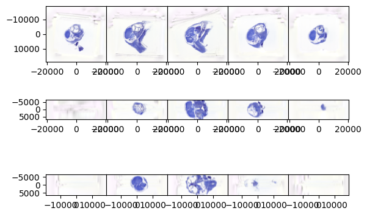
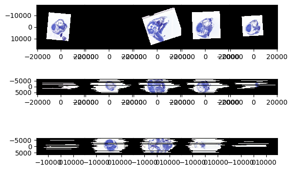
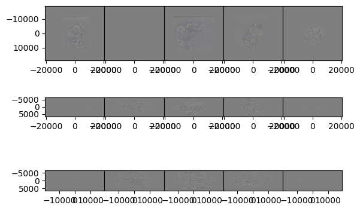
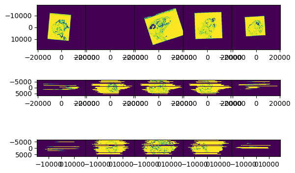
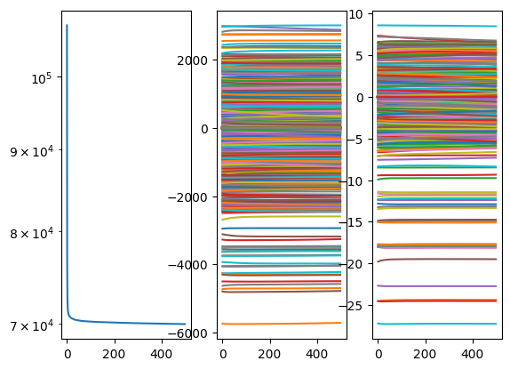
starting it 0
starting it 1
starting it 2
starting it 3
starting it 4
starting it 5
starting it 6
starting it 7
starting it 8
starting it 9
starting it 10
starting it 11
starting it 12
starting it 13
starting it 14
starting it 15
starting it 16
starting it 17
starting it 18
starting it 19
starting it 20
starting it 21
starting it 22
starting it 23
starting it 24
starting it 25
starting it 26
starting it 27
starting it 28
starting it 29
starting it 30
starting it 31
starting it 32
starting it 33
starting it 34
starting it 35
starting it 36
starting it 37
starting it 38
starting it 39
starting it 40
starting it 41
starting it 42
starting it 43
starting it 44
starting it 45
starting it 46
starting it 47
starting it 48
starting it 49
starting it 50
starting it 51
starting it 52
starting it 53
starting it 54
starting it 55
starting it 56
starting it 57
starting it 58
starting it 59
starting it 60
starting it 61
starting it 62
starting it 63
starting it 64
starting it 65
starting it 66
starting it 67
starting it 68
starting it 69
starting it 70
starting it 71
starting it 72
starting it 73
starting it 74
starting it 75
starting it 76
starting it 77
starting it 78
starting it 79
starting it 80
starting it 81
starting it 82
starting it 83
starting it 84
starting it 85
starting it 86
starting it 87
starting it 88
starting it 89
starting it 90
starting it 91
starting it 92
starting it 93
starting it 94
starting it 95
starting it 96
starting it 97
starting it 98
starting it 99
starting it 100
starting it 101
starting it 102
starting it 103
starting it 104
starting it 105
starting it 106
starting it 107
starting it 108
starting it 109
starting it 110
starting it 111
starting it 112
starting it 113
starting it 114
starting it 115
starting it 116
starting it 117
starting it 118
starting it 119
starting it 120
starting it 121
starting it 122
starting it 123
starting it 124
starting it 125
starting it 126
starting it 127
starting it 128
starting it 129
starting it 130
starting it 131
starting it 132
starting it 133
starting it 134
starting it 135
starting it 136
starting it 137
starting it 138
starting it 139
starting it 140
starting it 141
starting it 142
starting it 143
starting it 144
starting it 145
starting it 146
starting it 147
starting it 148
starting it 149
starting it 150
starting it 151
starting it 152
starting it 153
starting it 154
starting it 155
starting it 156
starting it 157
starting it 158
starting it 159
starting it 160
starting it 161
starting it 162
starting it 163
starting it 164
starting it 165
starting it 166
starting it 167
starting it 168
starting it 169
starting it 170
starting it 171
starting it 172
starting it 173
starting it 174
starting it 175
starting it 176
starting it 177
starting it 178
starting it 179
starting it 180
starting it 181
starting it 182
starting it 183
starting it 184
starting it 185
starting it 186
starting it 187
starting it 188
starting it 189
starting it 190
starting it 191
starting it 192
starting it 193
starting it 194
starting it 195
starting it 196
starting it 197
starting it 198
starting it 199
starting it 200
starting it 201
starting it 202
starting it 203
starting it 204
starting it 205
starting it 206
starting it 207
starting it 208
starting it 209
starting it 210
starting it 211
starting it 212
starting it 213
starting it 214
starting it 215
starting it 216
starting it 217
starting it 218
starting it 219
starting it 220
starting it 221
starting it 222
starting it 223
starting it 224
starting it 225
starting it 226
starting it 227
starting it 228
starting it 229
starting it 230
starting it 231
starting it 232
starting it 233
starting it 234
starting it 235
starting it 236
starting it 237
starting it 238
starting it 239
starting it 240
starting it 241
starting it 242
starting it 243
starting it 244
starting it 245
starting it 246
starting it 247
starting it 248
starting it 249
starting it 250
starting it 251
starting it 252
starting it 253
starting it 254
starting it 255
starting it 256
starting it 257
starting it 258
starting it 259
starting it 260
starting it 261
starting it 262
starting it 263
starting it 264
starting it 265
starting it 266
starting it 267
starting it 268
starting it 269
starting it 270
starting it 271
starting it 272
starting it 273
starting it 274
starting it 275
starting it 276
starting it 277
starting it 278
starting it 279
starting it 280
starting it 281
starting it 282
starting it 283
starting it 284
starting it 285
starting it 286
starting it 287
starting it 288
starting it 289
starting it 290
starting it 291
starting it 292
starting it 293
starting it 294
starting it 295
starting it 296
starting it 297
starting it 298
starting it 299
starting it 300
starting it 301
starting it 302
starting it 303
starting it 304
starting it 305
starting it 306
starting it 307
starting it 308
starting it 309
starting it 310
starting it 311
starting it 312
starting it 313
starting it 314
starting it 315
starting it 316
starting it 317
starting it 318
starting it 319
starting it 320
starting it 321
starting it 322
starting it 323
starting it 324
starting it 325
starting it 326
starting it 327
starting it 328
starting it 329
starting it 330
starting it 331
starting it 332
starting it 333
starting it 334
starting it 335
starting it 336
starting it 337
starting it 338
starting it 339
starting it 340
starting it 341
starting it 342
starting it 343
starting it 344
starting it 345
starting it 346
starting it 347
starting it 348
starting it 349
starting it 350
starting it 351
starting it 352
starting it 353
starting it 354
starting it 355
starting it 356
starting it 357
starting it 358
starting it 359
starting it 360
starting it 361
starting it 362
starting it 363
starting it 364
starting it 365
starting it 366
starting it 367
starting it 368
starting it 369
starting it 370
starting it 371
starting it 372
starting it 373
starting it 374
starting it 375
starting it 376
starting it 377
starting it 378
starting it 379
starting it 380
starting it 381
starting it 382
starting it 383
starting it 384
starting it 385
starting it 386
starting it 387
starting it 388
starting it 389
starting it 390
starting it 391
starting it 392
starting it 393
starting it 394
starting it 395
starting it 396
starting it 397
starting it 398
starting it 399
starting it 400
starting it 401
starting it 402
starting it 403
starting it 404
starting it 405
starting it 406
starting it 407
starting it 408
starting it 409
starting it 410
starting it 411
starting it 412
starting it 413
starting it 414
starting it 415
starting it 416
starting it 417
starting it 418
starting it 419
starting it 420
starting it 421
starting it 422
starting it 423
starting it 424
starting it 425
starting it 426
starting it 427
starting it 428
starting it 429
starting it 430
starting it 431
starting it 432
starting it 433
starting it 434
starting it 435
starting it 436
starting it 437
starting it 438
starting it 439
starting it 440
starting it 441
starting it 442
starting it 443
starting it 444
starting it 445
starting it 446
starting it 447
starting it 448
starting it 449
starting it 450
starting it 451
starting it 452
starting it 453
starting it 454
starting it 455
starting it 456
starting it 457
starting it 458
starting it 459
starting it 460
starting it 461
starting it 462
starting it 463
starting it 464
starting it 465
starting it 466
starting it 467
starting it 468
starting it 469
starting it 470
starting it 471
starting it 472
starting it 473
starting it 474
starting it 475
starting it 476
starting it 477
starting it 478
starting it 479
starting it 480
starting it 481
starting it 482
starting it 483
starting it 484
starting it 485
starting it 486
starting it 487
starting it 488
starting it 489
starting it 490
starting it 491
starting it 492
starting it 493
starting it 494
starting it 495
starting it 496
starting it 497
starting it 498
starting it 499
[47]:
# save the rigid transforms
np.save('v03_rigid_2.npy',Rout2.cpu().numpy())
[48]:
# last time no downsampling
[49]:
# upsample with sinc
I_ = afa.sinc_upsample(Idout2,I.shape[-3:])
[50]:
# before I run this, downsample the image
down = [1,1]
xId,Id = afa.downsample_image_domain(xI,I_,[1,down[0],down[1]])
xJd,Jd,W0d = afa.downsample_image_domain(xJ,J,[1,down[0],down[1]],W0,)
Jd = gaussian_filter(Jd*W0d,blur)
W0db = (gaussian_filter(W0d,blur[1:]))
Jd = Jd / (W0db + 1e-6)
Jd = torch.tensor(Jd,dtype=dtype)
W0d = torch.tensor(W0db,dtype=dtype)
a = a
Lhatd, LLhatd, Kblurhatd = afa.get_frequency_operators(Id.shape[1:],np.array([x[1] -x[0] for x in xId]),a,p)
[51]:
eL3 = eL0/500
eT3 = eT0/500
niter3 = 200
[52]:
Rout3, Idout3, RiJd, RiWd, RId = afa.atlas_free_alignment(
xId,Id,xJd,Jd,W0d,Kblurhatd,
Rout2,
niter3, niter_atlas0, eL3, eT3,
c=c, figprefix='v03_it_03', ndraw=10)
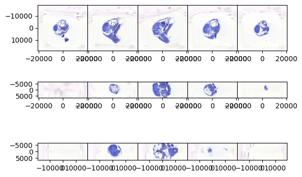
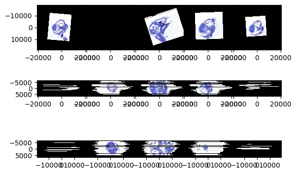
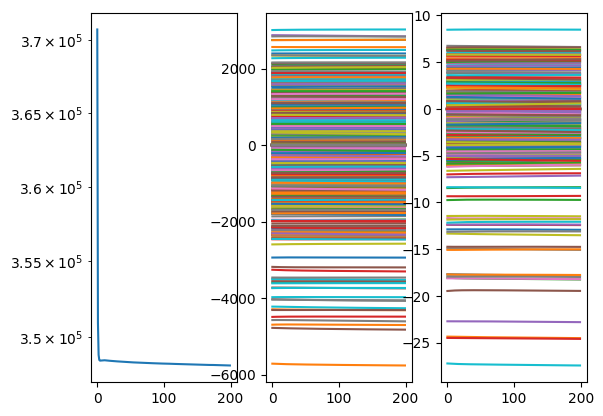
starting it 0
starting it 1
starting it 2
starting it 3
starting it 4
starting it 5
starting it 6
starting it 7
starting it 8
starting it 9
starting it 10
starting it 11
starting it 12
starting it 13
starting it 14
starting it 15
starting it 16
starting it 17
starting it 18
starting it 19
starting it 20
starting it 21
starting it 22
starting it 23
starting it 24
starting it 25
starting it 26
starting it 27
starting it 28
starting it 29
starting it 30
starting it 31
starting it 32
starting it 33
starting it 34
starting it 35
starting it 36
starting it 37
starting it 38
starting it 39
starting it 40
starting it 41
starting it 42
starting it 43
starting it 44
starting it 45
starting it 46
starting it 47
starting it 48
starting it 49
starting it 50
starting it 51
starting it 52
starting it 53
starting it 54
starting it 55
starting it 56
starting it 57
starting it 58
starting it 59
starting it 60
starting it 61
starting it 62
starting it 63
starting it 64
starting it 65
starting it 66
starting it 67
starting it 68
starting it 69
starting it 70
starting it 71
starting it 72
starting it 73
starting it 74
starting it 75
starting it 76
starting it 77
starting it 78
starting it 79
starting it 80
starting it 81
starting it 82
starting it 83
starting it 84
starting it 85
starting it 86
starting it 87
starting it 88
starting it 89
starting it 90
starting it 91
starting it 92
starting it 93
starting it 94
starting it 95
starting it 96
starting it 97
starting it 98
starting it 99
starting it 100
starting it 101
starting it 102
starting it 103
starting it 104
starting it 105
starting it 106
starting it 107
starting it 108
starting it 109
starting it 110
starting it 111
starting it 112
starting it 113
starting it 114
starting it 115
starting it 116
starting it 117
starting it 118
starting it 119
starting it 120
starting it 121
starting it 122
starting it 123
starting it 124
starting it 125
starting it 126
starting it 127
starting it 128
starting it 129
starting it 130
starting it 131
starting it 132
starting it 133
starting it 134
starting it 135
starting it 136
starting it 137
starting it 138
starting it 139
starting it 140
starting it 141
starting it 142
starting it 143
starting it 144
starting it 145
starting it 146
starting it 147
starting it 148
starting it 149
starting it 150
starting it 151
starting it 152
starting it 153
starting it 154
starting it 155
starting it 156
starting it 157
starting it 158
starting it 159
starting it 160
starting it 161
starting it 162
starting it 163
starting it 164
starting it 165
starting it 166
starting it 167
starting it 168
starting it 169
starting it 170
starting it 171
starting it 172
starting it 173
starting it 174
starting it 175
starting it 176
starting it 177
starting it 178
starting it 179
starting it 180
starting it 181
starting it 182
starting it 183
starting it 184
starting it 185
starting it 186
starting it 187
starting it 188
starting it 189
starting it 190
starting it 191
starting it 192
starting it 193
starting it 194
starting it 195
starting it 196
starting it 197
starting it 198
starting it 199
[53]:
# let's write it out
[54]:
import nibabel as nib
dI = np.array([x[1] - x[0] for x in xI])
affine = np.diag(dI.tolist()+[1])
affine[:3,-1] = np.array([x[0] for x in xI])
vol = nib.Nifti1Image((Idout3.permute(1,2,3,0).cpu().numpy()*256).clip(0,255).astype(np.uint8),affine)
[55]:
# save the rigid transforms
np.save('v03_rigid_3.npy',Rout2.cpu().numpy())
[57]:
# save it
nib.save(vol,'finch_test_03.nii.gz')
[58]:
vol.shape
[58]:
(335, 651, 704, 3)
[ ]: